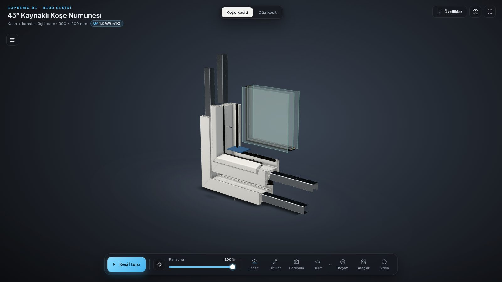

İlk istekten teslime kadar: girdiler, kullanılan araçlar ve kurulumları, her parçanın üretim tarifi, uyulan ilkeler, karşılaşılan sorunlar ve çözümleri, yeni bir oturuma verilecek hazır istemler.
Bu kılavuz, Supremo 85 3B görüntüleyici projesinin nasıl yapıldığını baştan sona anlatır. Projeyi yeni bir oturumda sıfırdan yeniden yaptırmak için gereken her şeyi de bir arada tutar. Proje dosyaları ya da bu sohbet kaybolsa bile, aşağıda sayılan belgelerle aynı ürüne yeniden ulaşılabilir.
Kılavuz şu sorulara yanıt verir:
Kodun satır satır kopyası bu belgede yoktur. Kod GitHub deposunda ve önerilen depo yedeğinde durur (1.2). Kılavuz, kod tamamen kaybolsa bile aynı işlevi yeniden yazdıracak ayrıntıyı verir: yöntemler, parametreler, sayılar, arayüz metinleri ve kabul ölçütleri.
İkinci belge: Teknik dokümantasyon (Supremo85_3B_teknik_dokumantasyon.pdf) bitmiş sistemin nasıl çalıştığını anlatır: mimari, gölgelendiriciler, modüller, bütçe. Bu kılavuz ise projenin nasıl yapıldığını ve nasıl yeniden yapılacağını anlatır. İkisi birlikte saklanmalıdır; bu kılavuz yer yer ona gönderme yapar ("Teknik dok. 5.4" gibi).
| Dosya | Neden gerekli | Nerede |
|---|---|---|
Teknik üretim dökümanı (32 sayfa; sohbete Supremo.pdf adıyla yüklendi, projede Supremo85_teknik_dokuman.pdf) | Tüm kesit geometrisi ve imalat kuralları bu belgeden çıkar. Bu belge olmadan proje aynı doğrulukla yeniden yapılamaz. | Sizde. Depoya bilerek konmadı (telif; .gitignore). |
ift test belgesi (Supremo-8500-Certificate.pdf) | Arayüzdeki tek resmi performans değeri (Uf = 1,0 W/(m²K)) buradan gelir. | Sizde. Depoda yok. |
| Bu kılavuz ve teknik dokümantasyon | Yeniden yapım tarifi ve sistemin tarifi. | Sohbette gönderildi; depoda output/docs/. |
Site ZIP'i (Supremo85_3B_site.zip) | Çalışan son site. Kurulum gerekmez; index.html'e çift tıklamak yeterli. | Sohbette gönderildi. |
GitHub deposu, dal claude/festive-noether-f394lu | Tüm kaynak kod, betikler, ara dosyalar ve commit geçmişi. | GitHub, emirhanbarin hesabı altındaki bu projenin deposu. |
Depo yedeği (önerilir; Supremo85_proje_yedegi.bundle) | GitHub erişimi ya da dal kaybolursa kod ve bütün commit geçmişi bu dosyadan geri gelir. | Sohbette gönderildi; gönderim sınırı yüzünden iki parça (.parca1, .parca2). Siz saklayın. |
Önemli: Çalışma dalı henüz ana dala (main) birleştirilmedi. Dal silinirse kod da gider. Kalıcı güvence için dalı birleştirin ya da depo yedeğini saklayın.
Depo yedeğini açmak: önce parçalar birleştirilir, sonra yedek sıradan bir depo gibi klonlanır. Git kurulu herhangi bir bilgisayarda çalışır; istenirse yeni bir GitHub deposuna gönderilir.
# macOS / Linux
cat Supremo85_proje_yedegi.bundle.parca1 Supremo85_proje_yedegi.bundle.parca2 \
> Supremo85_proje_yedegi.bundle
# Windows (komut istemi)
copy /b Supremo85_proje_yedegi.bundle.parca1+Supremo85_proje_yedegi.bundle.parca2 ^
Supremo85_proje_yedegi.bundle
git bundle verify Supremo85_proje_yedegi.bundle
git clone Supremo85_proje_yedegi.bundle Supremo85 -b claude/festive-noether-f394lu
# yeni bir GitHub deposuna göndermek için (isteğe bağlı)
cd Supremo85
git remote set-url origin <yeni depo adresi>
git push -u origin claude/festive-noether-f394lu| Durum | Ne yapılır |
|---|---|
| A. Depo duruyor en kolay yol | Yeni oturumda depoyu bağlayın ve 10.5'teki "devam" istemini verin. Oturum dalı çeker, README'leri ve bu kılavuzu okur, testleri çalıştırır. Kod zaten hazırdır; kılavuz yalnızca bağlam sağlar. GitHub'daki depo kaybolduysa önce depo yedeğinden (1.2) geri kurup yeni bir depoya gönderin; sonrası aynı. |
| B. Depo yok, site ZIP'i var | Site olduğu gibi çalışır; fuar için yeterlidir. Değişiklik gerekiyorsa üretim hattı da gerekir: C yoluna geçin. Site ZIP'ini yeni oturuma verirseniz görsel hedef olarak kullanılabilir. |
| C. Her şey kayıp yalnız PDF'ler var | İki kaynak PDF'yi ve bu kılavuzu yeni oturuma yükleyin, 10.2'deki ana istemi verin ve 10.3'teki aşamaları sırayla yürütün. Sonuç kod olarak birebir aynı olmaz; ama aynı yöntemler, sayılar ve kabul ölçütleri kullanıldığı için işlev ve görünüm aynı olur. |
| Bölüm | Başlık | Ne zaman okunur |
|---|---|---|
| 2 | Proje özeti | Ürünün son hali ve sayılarla özeti. |
| 3 | İlk istek ve kararlar | Yeni oturuma "ne isteniyor" anlatılırken; ilk görev metni kelimesi kelimesine buradadır. |
| 4 | Kaynak belgeler | Hangi sayfadan hangi bilginin alındığı; çizimin nasıl okunduğu. |
| 5 | Çalışma ortamı ve araçlar | Kurulum komutları ve sürümler. |
| 6 | Yapım süreci | Aşamaların sırası ve her aşamada neyin neden yapıldığı. |
| 7 | Bileşen tarifleri | Bir parçayı yeniden yaparken: yöntem, sabitler, dosyalar. |
| 8 | İlkeler | Her aşamada; yeni oturumun uyması gereken kurallar. |
| 9 | Sorunlar ve çözümleri | Aynı hatalara düşmemek için yeni oturuma baştan verilir. |
| 10 | Yeniden yaptırma | Hazır istemler, aşama sırası, kabul ölçütleri. |
| 11 | Ekler | Dosya ağacı, komut sırası, sayısal sabitler, test listeleri, commit geçmişi, terimler. |
Supremo 85 (8500 serisi) uPVC pencere sisteminin iki 3B numunesini tarayıcıda gösteren, internet gerektirmeyen ve fuar ekranında gözetimsiz çalışan bir site. Tek bir uzun oturumda yapıldı: 23 Eylül 2026 gecesi başladı, 24 Eylül 2026 akşamı belgelerle tamamlandı.
index.html, açılış sayfası)kesit.html)output/site), derleme adımı yok.index.html'e çift tıklamak yeterli (file://).başlat.bat (Windows), başlat.command (Mac), kiosk başlatıcıları ve Python, Node, PowerShell ya da Perl ile çalışan dört yerel sunucu betiği.| Ölçü | Değer |
|---|---|
| Köşe numunesi: parça, üçgen, çizim çağrısı (açılış görünümü) | 26 parça · 84.880 üçgen · 27 çağrı |
| Köşe: en yoğun durum (su + çizim + ölçüler + işaretler) | 94.800 üçgen · 31 çağrı (sınır 150.000 / 50) |
| Düz numune | 22 parça · 74.738 üçgen · 23 çağrı |
| Site klasörü | {{DIR:site}}, {{FILES:site}} dosya; ZIP olarak 9,10 MB |
| Köşe varlıkları | GLB {{KB:site/assets/kose/supremo85_kose.glb}} · JS paketi {{KB:site/js/kose.js}} · file:// için gömülü kopya {{KB:site/assets/kose/assets-embedded.js}} |
| Testler | 106 kontrol: köşe 63 (http ve file:// ayrı ayrı), düz kesit 20, yapılandırıcı 23 |
| Köşe görüntüleyici kaynakları (elle yazılan modüller) | {{LINES:source/viewer-kose/js/main.js,source/viewer-kose/js/materials.js,source/viewer-kose/js/tour.js,source/viewer-kose/js/tour-data.js,source/viewer-kose/js/story.js,source/viewer-kose/js/lens.js,source/viewer-kose/js/chambers.js,source/viewer-kose/js/thermal.js,source/viewer-kose/js/section-inset.js,source/viewer-kose/js/measure.js,source/viewer-kose/js/configurator.js,source/viewer-kose/js/configurator-data.js,source/viewer-kose/js/window.js,source/viewer-kose/js/water.js,source/viewer-kose/js/drawing.js,source/viewer-kose/js/hotspots.js,source/viewer-kose/js/kiosk.js,source/viewer-kose/js/contact-shadow.js,source/viewer-kose/js/parts-data.js}} satır (19 dosya) |
| Düz kesit görüntüleyici kaynakları | {{LINES:source/viewer/js/main.js,source/viewer/js/materials.js,source/viewer/js/parts-data.js,source/viewer/js/contact-shadow.js}} satır (4 dosya) |
| Üretim hattı betikleri (Python) · test ve ölçüm betikleri (Node) | {{LINES:source/scripts/assembly_report.py,source/scripts/bake_ao.py,source/scripts/build2d.py,source/scripts/build_corner.py,source/scripts/build_model.py,source/scripts/check_assembly.py,source/scripts/comp.py,source/scripts/extract.py,source/scripts/extract2.py,source/scripts/extract3.py,source/scripts/extract_drawing_lines.py,source/scripts/extract_rings.py,source/scripts/extract_water_path.py,source/scripts/final2d.py,source/scripts/graph.py,source/scripts/interf.py,source/scripts/make_spangle.py,source/scripts/make_studio_hdri.py,source/scripts/make_wood_decor.py,source/scripts/overlay.py,source/scripts/overlay_3d.py,source/scripts/pdfseg.py,source/scripts/preview_corner.py,source/scripts/preview_render.py,source/scripts/render_studio_hdri.py,source/scripts/thermal_section.py}} satır · {{LINES:source/scripts/bench.mjs,source/scripts/browser_test.mjs,source/scripts/interaction_test.mjs,source/scripts/interaction_test_kose.mjs,source/scripts/kiosk_soak.mjs,source/scripts/test_configurator.mjs}} satır |
| Commit | {{COMMITCOUNT}} (bu kılavuzun derlendiği an; liste 11.5'te) |

Projenin ne olması gerektiği üç kaynaktan gelir: ilk görev metni, yol boyunca verilen yanıtlar ve bunlardan çıkan değişmez kurallar. Yeni bir oturuma bu bölüm olduğu gibi verilebilir.
Oturumun ilk mesajı (23.09.2026 22:17 UTC), teknik dökümanla birlikte gönderildi. Kelimesi kelimesine:
Metindeki iki ifade uygulamada şöyle karşılandı: "Blender bilgisayarda kurulu ve MCP ile erişebilirsin" denmesine rağmen oturumda Blender arayüzü ya da bir MCP aracı yoktu. Blender, PyPI'dan bpy modülü olarak kuruldu ve bütün Blender işi arayüzsüz Python betikleriyle yapıldı (bölüm 5). /output yolu ise depodaki output klasörüne verilen sembolik bağla karşılandı; bütün dosyalar depodadır.
İlk teslimden sonraki her istek ve seçenekli sorulara verilen yanıtlar, zaman sırasıyla (24.09.2026, UTC). Yanıtlar seçenek adlarıyla birebir yazılmıştır. Yeni oturum bir karar sorarsa önce bu tabloya bakılmalıdır.
| Saat | İstek ya da soru | Karar ve sonucu |
|---|---|---|
| 01:05 01:11 | "local host'ta çalıştırır mısın", ardından "ben http://localhost:8080/ adresinde göremiyorum" | Sunucu bulut konteynerinde çalışıyordu; kullanıcının localhost'u kendi bilgisayarıdır. Durum açıklandı, kanıt ekran görüntüleri ve ZIP gönderildi; kadraj düzeltildi (474d183). Siteyi barındırılan bir sayfa olarak yayınlama denemesi kullanıcı tarafından yarıda kesildi, yapılmadı. |
| 01:18 | "github bağladım push edebilirsin" | İlk iki commit gönderildi. Kullanıcıya daldan ZIP indirme yolu anlatıldı. |
| 01:21 | Mac'te "Apple could not verify başlat.command…" uyarısı | Gatekeeper'ı geçme yolu anlatıldı. Kalıcı çözüm olarak site sunucusuz açılır yapıldı: index.html'e çift tıklamak yeterli (54d8321). |
| 11:21 | "projeyi nasıl daha premium hale getirebiliriz" | Üç soru soruldu. Öncelik: "Görsel gerçekçilik", "Sunum ve anlatım", "Ürün içeriği" (dördüncü seçenek "Marka ve arayüz" seçilmedi). Kullanım yeri: "Fuar / kiosk ekranı". Kurumsal kimlik: "Nötr kalsın". |
| 11:36 | İlk premium planı (mevcut düz kesiti geliştirmek) geri çevrildi | Kullanıcının notu: köşe kesiti yapılsın; plan yalnız köşe kesitine uygulansın, mevcut sürüme dokunulmasın; sayfa köşe kesitiyle açılsın ve üstten diğer kesite geçilebilsin; fuarda gösterilecek düzeyde olsun; 360° otomatik dönsün (tam metin 6.3'te). Yeni plan 11:43'te onaylandı. |
| 14:01 14:02 | "Tamamlandı mı", ardından "Testleri şu an yapmana gerek yok durdurabilirsin" | Durum raporu ve ZIP gönderildi; süren 30 dakikalık kiosk dayanıklılık testi durduruldu. |
| 15:05 | "Ultra premium" için eksikler ve ek özellikler soruldu | Kod, döküman ve veri hattı üç paralel incelemeyle tarandı; dört soru soruldu. Paketler: "İmza özellikler", "Mühendislik araçları", "Köşeden pencereye" ("Fuar deneyimi" seçilmedi). Dil: "Yalnızca Türkçe". Ağ gerektiren ekstralar: "Hiçbiri, çevrimdışı". Resmî performans belgesi: "Var, göndereceğim". Plan 15:41'de onaylandı; hatalar ve içerik düzeltmeleri (Faz 0) seçimden bağımsız olarak plana alındı. |
| 15:42 | ift test belgesi yüklendi (Supremo-8500-Certificate.pdf) | Uf = 1,0 W/(m²K) değeri teknik özellikler kartına, başlık rozetine ve ısı haritası açıklamasına kaynağıyla eklendi. Belgedeki firma adı kullanılmadı. |
| 18:33 | "Tamam, testler bitince sonuçları ve ZİP'i gönderirsin" | Köşe testi http ve file:// ile 62/62; README bütçe sayıları (708881a); güncel ZIP gönderildi. |
| 19:28 | "Blender kullandın mı" | Evet: modelleme, montaj denetimi, AO pişirme ve önizleme render'ları arayüzsüz Blender 5.0 (bpy) ile yapıldı. "Blender tarafında bir şey yapmamı ister misiniz?" sorusuna yanıt: "Hayır, sadece sordum". Değişiklik yapılmadı. |
| 19:40 | "Ayrıntılı bir dokümantasyonunu PDF olarak oluşturup verebilir misin?" | Hedef kitle sorusuna yanıt: "Teknik (geliştirici)" (diğer seçenekler "Hepsi bir arada" ve "Kullanım ve kurulum"). Teknik dokümantasyon (0c88610); bu sırada kiosk boş ekran hatası bulunup düzeltildi (46a27ae). |
| 20:40 | Bu kılavuz: projenin nasıl yapıldığı ve yeni oturumda baştan nasıl yaptırılacağı | Bu belge. |
Aşağıdakiler seçenek olarak sunuldu ama seçilmedi. Yeni oturum bunları kendiliğinden eklememelidir; istenirse ayrıca karar verilir.
İlk görev metninden ve sonraki kararlardan çıkan, projenin her aşamasında uyulan kurallar. Yeni oturum bunları baştan bilmelidir.
| Kural | İçerik | Kaynağı |
|---|---|---|
| Ölçü uydurma yok | Geometri ve her sayı dökümandan gelir. Arayüzdeki sayının yanında sayfası yazar (s.9 gibi). Dökümanda olmayan her şey "varsayım" ya da "görsel amaçlı" diye etiketlenir ve Teknik özellikler kartında listelenir. | İlk görev; premium planı |
| İnternetsiz | three.js, yazı tipi, dokular dahil her şey klasörde. Hiçbir CDN, harici yazı tipi ya da API yok. Test, dış ağ isteği olmadığını denetler. | İlk görev; ağ kararı "hiçbiri" |
| Sunucusuz açılış | index.html'e çift tıklayınca da çalışır. İkili varlıklar bunun için bir JS dosyasına gömülür. | Teslimden sonra eklendi (bkz. 6) |
| Performans bütçesi | Her durumda < 150.000 üçgen ve < 50 çizim çağrısı; doku en çok 2048 px ve KTX2; geometri meshopt ile sıkıştırılmış; ağır son işlem ve gerçek zamanlı gölge yok; FPS tarayıcıda ölçülür. | İlk görev |
| Arayüz dili | Yalnızca Türkçe; dil seçimi yok. | İlk görev; dil kararı |
| Marka tarafsız | Ürün adı ("Supremo 85") görünür; üretici adı, logo ve kurumsal renk yok; koyu stüdyo teması. | Marka kararı "nötr kalsın" |
| Kullanım yeri | Fuar/kiosk ekranı: büyük, çoğu zaman dokunmatik ekran; kendini oynatan mod, büyük dokunma hedefleri, boşta sıfırlanma. | Kullanım kararı |
| Düz kesit dondurulur | Köşe kesiti ana sayfa olduktan sonra kesit.html, js/app.js ve düz kesit varlıkları değiştirilmez; yalnız sayfa geçişi ve kiosk desteği eklenir. | Premium plan geri bildirimi |
| Doğrula, sonra ilerle | Önce kesit çizim üzerine bindirilir; her aşamada render ya da ekran görüntüsü alınıp referansla karşılaştırılır; teslimden önce montaj çakışma/boşluk denetimi, tarayıcıda tüm etkileşimlerin testi ve FPS ölçümü yapılır. | İlk görev |
| Teslim biçimi | Site output/site'ta (derleme gerektirmez); başlat.bat ve başlat.command; Python/Node yoksa ne yapılacağı README'de tek satır; .blend ve ham dosyalar output/source'ta; kısa rapor (varsayımlar, FPS/üçgen/boyut, sınırlamalar). | İlk görev |
| Commit düzeni | Her aşama ya da faz ayrı commit ve push; tek çalışma dalı (claude/festive-noether-f394lu); istenmedikçe PR açılmaz. | Oturum kuralları |
| Soru sorma ölçüsü | İlk görevde soru sorulmaması istendi; belirsizlikte makul karar verilip raporda varsayım olarak yazıldı. Sonraki büyük adımlarda (premium, ultra premium, belge) seçenekli sorularla karar alındı. | İlk görev; sonraki oturum |
Projedeki her ölçü ve kural iki belgeden gelir: 32 sayfalık teknik üretim dökümanı ve ift Rosenheim test belgesi. Bu bölüm, hangi sayfadan hangi bilginin alındığını, kesit çiziminin nasıl okunduğunu ve belgenin kendi içindeki çelişkilerde nasıl karar verildiğini anlatır.
| Sayfa | Alınan bilgi | Projede nereye gitti |
|---|---|---|
| s.4 | Drenaj kapağının (rüzgarlık) biçimi: iki pimli sığ kapak. Ölçü yok. | Rüzgarlık modeli; ölçüsü 40 × 11 × 6,5 mm varsayım. |
| s.5 | Kesim tablosu, "kasadan kasaya" sütunu: kasa +6, kanat −74, kanat içi cam −202 (D = kasa dış ölçüsü). | Yapılandırıcının kesim listesi; üretim hikâyesi metni. |
| s.6 · s.7 | Kasa, kanat ve cam çıtası 45° kesilir. | Gönye düzlemi X = Y; hikâyenin kesim adımı. |
| s.8 | Yarık 32 × Ø4 mm; köşede iç uçtan 10 · 32 · 70 · 32; iç ve dış kanal 7 cm arayla; eğik yarık çizimde 50° (metinde 60°); kasa kanal adedi C < 500: 1 · 500–1000: 2 · 1000–2000: 3 · > 2000: 4; kapak montajın sonunda takılır. | Yarık geometrisi ve yerleri, su animasyonu, yapılandırıcının drenaj hesabı. |
| s.9 | Kesit çizimi (4.2): tüm profil, conta, çelik, cam ve yarık geometrisi; 42 su oku; basılı ölçüler. | section_mm.json, çizim bindirme, su yolu, halkalar, kamaralar, ısı hesabı. |
| s.10 | Kasa takviyesi A − 153; vida uçtan 150, sonra 300–400; 3,9 × 19 YSB; uçtan çeliğe "68". | Köşe modelinde çelik ve vida; yapılandırıcı; varsayım notu. |
| s.11 | Kanat takviyesi A − 160; vida uçtan 120; 3,9 × 19 YHB; kanat kanal adedi (1–3); eğik yarık 60°; kol mili kanat kenarından 33 mm. | Köşe modeli; yapılandırıcının kanat drenajı ve kol konumu. |
| s.14 | Kaynak plakası 240–280 °C, destek plakaları. | Hikâyenin kaynak adımı, bilgi işareti. |
| s.17 | Menteşe adedi: A < 1100: 2 · 1101–1400: 3 · > 1400: 4; yerleşim üstten ve alttan 165, ikincisi 350 altında, kalanlar eşit; kol A/2. | Yapılandırıcı (içe açılır). |
| s.24 | Çift açılım donanımı: GRM ispanyoletler (460–2300 mm, 6 satır) ve OR makaslar (420–1475 mm, 5 satır), kodlarıyla. | Yapılandırıcı (çift açılım). |
| s.32 | Vida tablosu: kasa takviyesi 3,9 × 22 YSB, kanat takviyesi 3,9 × 25 YHB (s.10/s.11'den farklı). | Yalnız "döküman içi fark" notu. |
s.9, alt kasanın düşey kesitidir: dış cephe solda, oda tarafı sağda; kanat üstte, 32 mm üçlü ısıcam kanadın cam yuvasında ve çizimin üst kenarında kesik. Sayfada 1412 çizim öğesi vardır; hepsi 0,5 pt kalınlıkta, kesikli çizgi yok. Parçalar renk ve çizim sırasıyla ayrılır:
| Renk | Anlamı | Nasıl ayrıldı |
|---|---|---|
| Siyah kontur | Kasa, kanat, cam çıtası konturları; iki vida (her biri ~135 öğe); 42 su oku (her biri 3 doğru) | Poligonlaştırma; sol kenar x0 < 140 pt kasa, < 200 pt kanat, kalanı çıta. Vidalar pt kutularıyla ayıklanır. |
| Siyah dolgu (4) | Yarık işaretleri A, B, C, D-E | Merkezleri yarık konumu olur. |
| Kırmızı | Kasa ve kanat çelik takviyeleri, dört conta, iki çıta dudağı (ve dudak taramaları) | Çizim sırası aralığıyla. |
| Mavi | Üç cam panelinin yüz çizgileri ve taramaları | Yüz çizgisi çiftlerinden tam dikdörtgen. |
| Mor | Cam takoz köprüsü | Renkle. |
| Gri · sarı · koyu gri | Isıcam ara çıtaları · nem alıcı granülleri · ikincil sızdırmazlık | Renk; ara çıta = birleşim − iç boşluk. |
| Yeşil | Ölçü çizgileri, ok başları, ölçü yazıları | Kalibrasyonda kullanılır, geometriye ve bindirmeye girmez. |
Çizim sırası numaraları bu PDF dosyasına özgüdür; dosya yeniden kaydedilirse değişebilir. Yeni oturum seçimi renk ve konumla doğrulamalıdır.
sx = (x − 138,44) / 3,0082, sy = (675,0 − y) / 3,0082. sx derinliktir (0 = kasa dış yüzü, oda tarafına artar), sy yüksekliktir (0 = kasa altı).Basılı olmayan her ölçü vektörden ölçülmüştür ve arayüzde "s.9 çiziminden ölçüldü" diye geçer: çelik U 30 × 27 mm, et 1,5 mm; contalar 7,3 × 11,5 mm (orta conta 9 × 17,9); takoz köprüsü 3,8 mm; ara çıta 10 × 7 mm; nem alıcı 8 × 5 mm; çıta 30 × 32,5 mm; vida eksenleri kasada sx 53,0, kanatta sx 72,39 (baştan uca ~20 mm; başlar çizimde ~1 mm dışarıda, modelde yüzeye oturtuldu). Kamara sayısı çizimden sayıldı: kasa 14, kanat 11.
42 ok (31 aşağı, 8 çapraz, 3 yatay) kolonlara ayrılır ve köşedeki yarık konumlarıyla birleştirilerek 23 noktalı, 434,7 mm'lik bir tahliye yolu kurulur. Yolun her noktası kesit poligonlarına karşı denetlenir; hiçbir nokta katının içinden geçmez.


| Belge | ift Rosenheim, 25-002770-PR01 (NW-K20-06-en-01), 28.11.2025; "süre sınırı yok" |
| Sonuç | Uf = 1,0 W/(m²K), EN 12412-2:2003-07 |
| Numune | Sistem 8500 SUPREMO; görünür genişlik 124 mm, derinlik 85 mm; kasa BF 8581 (74 × 85), kanat BF 8582 (84 × 85), takviye BF 409-15 (30 × 27, galvaniz). Test camın yerine 44 mm dolgu paneliyle yapıldı (kenar örtmesi 26 mm). |
| Kullanım | Teknik özellikler kartı, başlıktaki rozet, ısı haritası açıklaması. Belgede sahibi olan firmanın adı geçer; bu ad projede hiçbir yerde kullanılmaz. |
| Konu | Dökümanda | Karar |
|---|---|---|
| Takviye vidası boyu | s.10/s.11: 3,9 × 19; s.32: 3,9 × 22 YSB (kasa), 3,9 × 25 YHB (kanat). | 19 mm; fark bilgi panelinde not. |
| Kasa vidası başı | s.9 çiziminde havşa; s.10 metni YSB (silindir), s.32'de de silindir. | Köşede silindir baş (DIN 7504-N ölçüleri varsayım); kanatta havşa. Düz kesit sayfası dondurulduğu için orada havşa kaldı. |
| Kasa takviyesinin başlangıcı | s.10'da uçtan "68"; A − 153 simetrik okunursa 76,5. | İki uçta eşit 76,5 mm; iki değer de gösterilir. s.10 çiziminin kendisi ~75 mm'yi destekliyor; "68" tek başına kalıyor. |
| Eğik yarık açısı | s.8 metni 60°, s.8 çizimi 50°; s.11 kanatta 60°; s.9'daki işaretler 45°. | Köşede kasa 50°, kanat 60° (düşeyle). Düz numune s.9 işaretleriyle 45° (dondurulmuş). |
| Eksik haneli kod | s.24 OR 800/0 için 501110154 (diğerleri 10 hane). | Dökümandaki haliyle gösterilir; üreticiye teyit önerilir. |
| Sınır değerler | Tablolar sınırı tanımlamaz ("A < 1100", "1101 < A"). | Sınırda üst sınıf. |
| s.24 aralıklarının ölçüsü | Hangi ölçüye ait olduğu yazmıyor; aralıklar örtüşüyor. | GRM kanat yüksekliğiyle, OR kanat genişliğiyle karşılaştırılır; uyan hepsi listelenir (varsayım). |
| 3 menteşenin yeri | s.17 yalnız 4 menteşeyi çizer. | A − 165, A − 515, 165. |
| "10 mm" yarık referansı | Gönyenin iç ucundan; kesitteki karşılığı verilmemiş. | Kasa sy 74, kanat sy 102 (varsayım; kanadınki belirsiz). |
| Ara drenaj kanalları | Yalnız uçlardaki düzen verilmiş. | Aradakiler eşit aralıklı (varsayım). |
| Kanat dış ölçüsü | Doğrudan yok. | s.9'daki 40 mm → W − 80; s.5'teki −74 ile tutarlı (köşe başına 3 mm kaynak payı). |
Açık soru (3 mm): A bir kesim boyudur. s.5'teki +6 köşe başına 3 mm kaynak payıysa, kaynaklı köşeden simetrik geri çekilme kasada (153 − 6) / 2 = 73,5 mm, kanatta (160 − 6) / 2 = 77 mm olur. Model 76,5 / 80 mm kullanıyor, yani A'yı bitmiş boy gibi alıyor. Bu kılavuz hazırlanırken fark edildi; üreticiyle teyit edilmeden değiştirilmedi.
İleride eklenebilecek özellikler için hazır veri:
Dökümanda olmayanlar (başka kaynak gerekir): Uf dışındaki performans sınıfları, renk ve folyo kartelası, çelik katalog değerleri, başka cam kalınlıklarının ölçüleri.
Proje, Claude Code'un bulut oturumunda, geçici bir Linux konteynerinde yapıldı. Aşağıda ortamın özellikleri, neyin engelli olduğu, hangi aracın nasıl kurulduğu ve testlerin bu ortamda nasıl çalıştırıldığı yazılıdır. Yeni oturumun ortamı farklı olabilir; bu bölümdeki kısıtlar gevşekse (ör. GPU varsa) yöntemler yine geçerlidir.
| Konu | Durum |
|---|---|
| Makine | Linux (Ubuntu 24.04 tabanlı), 4 çekirdek, 15 GB bellek, GPU yok (/dev/dri yok). gcc, cmake, git hazır. |
| Hazır gelenler | Python 3.11.15, Node 22.22.2 (npm, npx), Perl 5.38.2, Playwright için kurulu Chromium 141 (/opt/pw-browsers/chromium). |
| Olmayanlar | Blender, poppler (pdftoppm), PDF ve bilimsel Python paketleri. Görev metni "Blender MCP ile erişebilirsin" dese de oturumda Blender arayüzü ya da MCP aracı yoktu. |
| Ağ | Giden bağlantılar bir vekil sunucudan geçer. Açık: PyPI, npm kayıt defteri, GitHub sürüm indirmeleri, raw.githubusercontent.com, Ubuntu ana arşivi. Kapalı: download.blender.org ve aynaları, Poly Haven, ambientCG, Launchpad PPA. |
| Sonuçları | Blender, PyPI'dan bpy modülü olarak kuruldu ve arayüzsüz çalıştı. HDRI, ahşap ve galvaniz desenleri dışarıdan indirilemediği için yerelde üretildi. FPS, GPU olmadığından gerçek değeriyle ölçülemedi. |
| Depo | Başta boş bir GitHub deposu; çalışma dalı claude/festive-noether-f394lu. İlk push, GitHub uygulamasına izin verilmediği için reddedildi (bölüm 9). |
Asıl oturumda çalışan komutlar, sırasıyla. Node araçları depo dışında ayrı bir araç klasörüne kuruldu; depoda package.json yoktur (öneri: yeni oturumda bir araç klasörü package.json'ı ile sabitlenebilir).
# 1. PDF, geometri ve görüntü kütüphaneleri
pip install pymupdf numpy pillow shapely scipy matplotlib
# 2. Blender, Python modülü olarak (yaklaşık 10 dk; numpy'yi 1.26.4'e düşürür, zararsız)
pip install bpy # kurulan: bpy 5.0.1 (Cycles ve glTF dışa aktarıcı dahil)
python3 -c "import bpy; print(bpy.app.version_string)"
# 3. Sistem paketleri: PDF araçları, sanal ekran ve yazılımsal OpenGL
apt-get install -y poppler-utils
apt-get install -y xvfb libegl1 libegl-mesa0 libgl1-mesa-dri mesa-utils
# 4. Node araç klasörü (depo dışında)
mkdir -p tools && cd tools && npm init -y
npm install three @gltf-transform/cli @gltf-transform/core @gltf-transform/extensions \
@gltf-transform/functions meshoptimizer playwright-core esbuild three-mesh-bvh \
@fontsource-variable/inter
# 5. KTX-Software 4.3.2 (GitHub sürüm arşivi; PATH'e eklenmez)
V=https://github.com/KhronosGroup/KTX-Software/releases/download/v4.3.2
curl -sSL -o ktx.tar.bz2 $V/KTX-Software-4.3.2-Linux-x86_64.tar.bz2
tar xjf ktx.tar.bz2
export LD_LIBRARY_PATH=$PWD/KTX-Software-4.3.2-Linux-x86_64/lib
./KTX-Software-4.3.2-Linux-x86_64/bin/ktx --version # ktx version: v4.3.2~6
# 6. (isteğe bağlı) PowerShell 7: yalnız sunucu.ps1'i Linux'ta denemek için
P=https://github.com/PowerShell/PowerShell/releases/download/v7.4.6
curl -sSL -o pwsh.tgz $P/powershell-7.4.6-linux-x64.tar.gz
mkdir -p pwsh && tar xzf pwsh.tgz -C pwshKurulmaması gerekenler: playwright install çalıştırılmaz (ortam yasaklar; hazır Chromium kullanılır). İlk oturumda kurulan opencv-python-headless hiç kullanılmadı ve bpy'nin getirdiği numpy 1.26 ile çakışma uyarısı verdi; kurmaya gerek yok.
| Araç · sürüm | Projede ne için ve nasıl kullanıldı |
|---|---|
| PyMuPDF 1.28.2 | s.9 çiziminin vektör yollarını (renk, dolgu, çizim sırası) okumak; ölçü metinlerini ve su oklarını çıkarmak. import pymupdf (eski fitz adı kullanımdan kalkıyor). |
| Shapely 2.1.2 (GEOS 3.13) | Çizgilerden kapalı poligon kurmak (polygonize_full), sadeleştirme, yuvarlatma; uç kapaklar için kısıtlı Delaunay üçgenlemesi. |
| NumPy · SciPy 1.26 · 1.17 | Uç nokta eşleme (cKDTree), ısı çözümü (scipy.sparse.linalg.spsolve), prosedürel desenler. |
| matplotlib · Pillow | Kesit bindirme çizimleri, doku önizlemeleri, temas sayfaları. |
| poppler-utils 24.02 | PDF sayfalarını görüntüye çevirmek (pdftoppm), metin ve bilgi (pdftotext, pdfinfo); belge denetimleri. |
Blender bpy 5.0.1 | Arayüzsüz, python3 betik.py ile: numune modelleri (bmesh), montaj denetimi (BVH), UV atlası ve Cycles AO pişirme, glTF dışa aktarım, stüdyo HDRI render'ı, önizleme render'ları. Toplam 8 betik. |
| gltf-transform 4.5 · meshoptimizer 1.2 | GLB'yi meshopt ile sıkıştırmak ve nicemlemek (konum 16, normal 12, UV 14 bit). |
| KTX-Software 4.3.2 | Dokuları KTX2'ye çevirmek: AO için Basis ETC1S, HDRI için ham RGBA16F + zstd, ısı haritası için ham R16F + zstd. Betiklere yolu KTX ya da KTX_BIN ile verilir, LD_LIBRARY_PATH gerekir. |
| three.js r186 · three-mesh-bvh 0.9.15 | Görüntüleyici. three.js yalnız kullanılan sınıflarla tek dosyaya paketlenir (vendor-entry.js). BVH, ışın izleme ve düzlem kesişimini hızlandırır. |
| esbuild 0.28.2 | Kaynak modülleri tek bir klasik (IIFE) pakete derlemek; three alt kümesi paketi. |
| Inter (@fontsource-variable) 5.3 | Arayüz yazı tipi; latin ve latin-ext değişken woff2, CSS'e base64 olarak gömülü (Türkçe karakterleri kapsar). |
| playwright-core 1.63 + Chromium 141 | Uçtan uca tarayıcı testleri, ekran görüntüleri, bütçe ölçümü, belge PDF'i (page.pdf). |
| Xvfb + Mesa llvmpipe | GPU olmadan WebGL: sanal ekran ve işlemcide çalışan OpenGL. |
| PowerShell 7 · Perl · Python · Node | Dört yerel sunucu betiğinin (sunucu.*) yazılıp Linux'ta denenmesi. |
GPU olmadığı için WebGL işlemcide çalıştırıldı. Bu düzen deneyerek bulundu; yeni oturumda doğrudan kullanılmalıdır.
chromium.launch({ executablePath: '/opt/pw-browsers/chromium', headless: false, args }), sanal ekran içinde: xvfb-run -a -s "-screen 0 2000x2000x24" node test.mjs <adres> <çıktı klasörü>. Başsız (headless) kipte ekran görüntüsü zaman aşımına uğruyordu.--use-gl=angle --use-angle=gl --ignore-gpu-blocklist → "ANGLE (Mesa, llvmpipe)". Testlerde ayrıca --disable-gpu-watchdog: yazılımsal GL'de tek kare saniyeler sürebildiği için GPU gözetçisi bağlamı öldürüyordu. SOFT_GL=swiftshader ile SwiftShader seçilebilir.cd output/site && python3 -m http.server 8091 --bind 127.0.0.1; testten önce curl ile 200 döndüğü doğrulanır. file:// testi için aynı betiğe file:///…/output/site/index.html verilir.| Tuzak | Ne yapmalı |
|---|---|
Ön planda sleep engelli | Uzun işleri arka planda başlatıp bitişini izleyin (arka plan görev bildirimi ya da until döngüsüyle izleme). |
pkill -f <desen> kendi kabuğunu öldürüyor (çıkış kodu 144) | Desen, komutu çalıştıran kabuğun satırıyla da eşleşir. Süreçleri PID ile durdurun; başlatma ve öldürmeyi aynı satıra koymayın. |
| Konteyner yeniden başlayınca sunucular kapanır | Her testten önce sunucuyu curl ile doğrulayın. Kalıcı olan yalnız depoya gönderilen dosyalardır; her aşamada commit + push. |
| Bağlam dolması (uzun oturum) | Asıl oturumda dört kez oldu. Araç çıktılarını tail/grep ile kısaltın, plan ve ilerleme notunu dosyada tutun. |
| esbuild modülleri bulamıyor | esbuild, modülleri giriş dosyasının klasöründen çözer; node_modules araç klasöründe olduğu için derlemeyi oradan çalıştırın ya da girişi stdin'den verin (7.14). |
require('three/package.json') hata veriyor | Paket bu yolu dışa açmaz; sürümü dosyadan okuyun (grep '"version"' node_modules/three/package.json). |
| Kaynak PDF'lerin yeri | Asıl oturumda output/source/reference/ altına kopyalandı ve .gitignore'a yazıldı. Görev metnindeki /output yolu için depodaki output klasörüne sembolik bağ kuruldu. |
Proje beş büyük adımda büyüdü: düz kesit görüntüleyicisi, sunucusuz açılış, premium köşe kesiti, "ultra premium" fazları (0, A, B, C) ve belgeler. Her adım bir istekle başladı, bir plan ve kararlarla şekillendi, commit ve raporla bitti.
Şekil 6.1 · Zaman çizelgesi (UTC). Üstte teslimler (commit), altta istekler ve kararlar; gece boşluğu kısaltılmıştır.
İstek: İlk görev metni (3.1). Süre: 23.09 22:17 → 24.09 00:03, yaklaşık 1 saat 45 dakika. Commit: 685dc90 (63 dosya).
bpy kuruldu.başlat.bat, başlat.command, dört yerel sunucu; README; 20/20 etkileşim testi; ZIP (2,4 MB).Rapor edilen sayılar: 74.738 üçgen, 23 çizim çağrısı (kesit ya da ölçüler açıkken en çok 26); en büyük doku 2048²; model 548 KB; site 3,53 MB. FPS yalnız yazılımsal GL'de ölçülebildi: 1280 × 720'de 0,22 FPS, 1920 × 1080'de 0,12 FPS. Gerçek değer için uygulamaya 6 sn'lik "Performans testi" eklendi.
İlk sürümün varsayımları: sol dış / sağ iç (drenaj oklarından ve çıta konumundan); vidalar 3,9 × 19 havşa baş, numune kısa olduğu için uçlardan 40 mm (dökümanda 150 mm); rüzgarlık 40 × 11 × 6,5 mm ve 100 mm'lik iki takoz köprüsü (ölçüsüz parçalar); ara çıta alüminyum, çıta dudakları TPE.
Süre: 24.09 01:05 → 01:37. Commit: 474d183, 54d8321.
localhost'u kendi bilgisayarıdır. Durum açıklandı, konteynerdeki tarayıcıdan ekran görüntüleri ve ZIP gönderildi. Aynı sırada, varsayılan görünümde modelin alt araç çubuğuna değdiği görülüp kadraj genişletildi (474d183).sh + dosyayı sürükle.54d8321): Site betiksiz ve sunucusuz açılır hale getirildi. HTML çalıştırılabilir sayılmadığı için macOS uyarı vermez. Kaynaklar tek klasik pakete derlendi, varlıklar data: URL olarak gömüldü. Site 3,5 → 6,9 MB oldu; test http ve file:// ile 20/20.İstek: "Projeyi nasıl daha premium hale getirebiliriz" (24.09 11:21). Kararlar: öncelik görsel gerçekçilik + sunum/anlatım + ürün içeriği; kullanım fuar/kiosk; marka nötr. İlk plan (mevcut sayfayı geliştirmek) kullanıcı tarafından geri çevrildi: "köşe kesiti yapabilir misin? Planı tamamen uygula ama köşe kesiti için uygula, şu an mevcut sürüme uygulama. Sayfa açılınca ilk köşe kesiti çıksın, üst taraftan diğer kesite geçebileyim. Fuarda gösterebileceğimiz kadar premium ve üst düzey olsun, ayrıca 360 derece otomatik olarak döndürebilelim." Yeni plan onaylandı.
Commit: b69e2af (köşe geometrisi, montaj denetimi, AO), c0a41dd (premium köşe sayfası açılış sayfası oldu; düz kesit kesit.html'e taşındı), 0cb39d8 (kiosk başlatıcıları, --kiosk sunucu seçeneği, köşe testleri, belgeler), e0a291a (ahşap desen ve mikro ayrıntıda birim hatası).
İstek: "Eksiksiz, farklı inovasyonları içinde barındıran, şaşırtıcı ama kullanışlı, ultra premium bir hale getirmek istesek eksikler nelerdir, ekstra olarak neler eklenebilir?" (15:05). Üç paralel inceleme yapıldı (kod, döküman, veri hattı); kiosk kilitlenmesi ve bütçe aşımı gibi gerçek hatalar ve dökümanda kullanılmamış çok miktarda imalat verisi bulundu. Kararlar: Faz 0 (hatalar + içerik doğruluğu) her durumda; ek olarak "İmza özellikler", "Mühendislik araçları", "Köşeden pencereye"; dil yalnız Türkçe; ağ gerektiren hiçbir şey yok; resmî performans belgesi gönderilecek (ift belgesi 15:42'de geldi).
| Faz · commit | İçerik |
|---|---|
Faz 0bbd481f | 11 hata: açılışta dokunulunca kioskun kilitlenmesi; saydam çift yüzlü malzemelerin iki geçişte çizilmesiyle tur bölümlerinde ~156K üçgen / 48 çağrı; tanıtıma geçişte açık kalan pencereler; sayfa geçişinde kaybolan kiosk parametreleri; takılı kalabilen "ilk dokunuşu yut" bayrağı; düğme senkronu; klavye (Ctrl+C, Türkçe Q'da ı); tek yönlü kalite düşürme; her karede düzen okuması; kiosk dayanıklılığı; küçük temizlikler. İçerik: kasa vidası YSB silindir baş, s.32 vida farkı notu, takviye başlangıcı 68 / 76,5, "30 × 27 × 1,5 U" kaynağı "s.9 çiziminden ölçüldü", yarık açısı 50° / 60°. ift belgesiyle resmî Uf kartı ve rozeti. |
Faz A25ac8eb | Üretim hikâyesi (ekstrüzyon → 45° kesim → takviye ve vidalar → 240–280 °C kaynak → köşe temizleme → montaj, 46 sn), röntgen merceği, kamara sayacı (14 / 11), iki renkli folyo ve renk karşılaştırma perdesi. |
Faz B3996193 | Isı haritası (EN ISO 10077-2 yöntemiyle 2B sonlu farklar, R16F doku), canlı 2B kesit penceresi, ölçüm aracı (kasa genişliği 85,0 mm). |
Faz Ce96d8ab | Köşeden pencereye: 620–2000 × 620–2400 mm, içe açılır ya da çift açılım; kesim listesi, drenaj, menteşe, kol ve s.24 donanımı dökümandan hesaplanır; tura yeni bölüm. Yapılandırıcı testi 23/23. |
708881a | README'deki bütçe sayıları (en yoğun 94.800 / 31, pencere kipi 91.202 / 30). |
Köşe testi bu aşamada 62/62 geçti (http ve file://). Bir önceki koşuda 60/62'ydi: biri testte zamanlama yarışı, biri gerçek bir hataydı (pencere işaretlerinde kanat yarıkları 40 mm kaymış, numune yarıklarının işaretleri eksik); ikisi de düzeltildi.
İstek: "Ayrıntılı bir dokümantasyonunu PDF olarak oluşturup verebilir misin?" (19:40); hedef kitle "Teknik (geliştirici)". Commit: 46a27ae, 0c88610.
c0a41dd'den beri vardı ve durum testlerinden geçmişti (bölüm 9). Düzeltildi, teste görünürlük kontrolü eklendi: 63/63.Her parçanın üretim tarifi: amaç, girdi ve çıktı, yöntem, sabitler, doğrulama ve tuzaklar. Sayıların hepsi betiklerden ve çıktı dosyalarından okunmuştur. Dosya ve betik adları depodakilerle aynıdır; yeni oturum aynı adları kullanırsa hem bu kılavuz hem teknik dokümantasyon ona da uyar.
Şekil 7.1 · Üretim hattı. Kesit (section_mm.json) modellerin, su yolunun, halkaların ve ısı hesabının girdisidir; build_corner.py'nin yazdığı kose_info.json su yolu ve yapılandırıcı testi için gerekir. Bütün varlıklar site/'a gittikten sonra build.sh çalıştırılır. Komutlar output/source/ içinden çalışır; tam sıra 11.2'de.
Tekrarlanabilirlik: Bu kılavuz hazırlanırken hat yeniden çalıştırıldı. 2B kesit, çizim, su yolu, halka ve ısı verileri, desenler, montaj raporları ve köşe numunesinin AO'su depodakiyle birebir aynı çıktı; modellerde nesne başına köşe ve üçgen sayıları aynıdır. GLB sıkıştırması ve dört Basis dokusu (iki AO, ahşap, galvaniz) 7.5 ve 7.6'daki komutlarla bit düzeyinde aynı üretildi. Tek istisna düz numunenin AO'sudur: aynı UV ve ayarlarla pişirilen AO, depodakinden gürültü düzeyinde farklıdır (ortalama aynı, korelasyon 0,9996).
section_mm.jsonAmaç: s.9'daki kesit çiziminin vektörlerinden 21 kapalı, delikli poligon (mm) üretmek. Girdi: reference/Supremo85_teknik_dokuman.pdf. Çıktı: section_mm.json (çalışma klasörüne yazılır). Komut: cd output/source && python3 scripts/final2d.py (~1 sn). Betik zinciri pdfseg.py → extract.py → comp.py → extract2.py → extract3.py → build2d.py → final2d.py; her biri öncekini from … import * ile alır.
doc[8].get_drawings() (s.9 = sıfır tabanlı 8). Her çizimin sırası (draw indeksi), çizgi ve dolgu rengi (2 ondalığa yuvarlanır) saklanır. Öğeler parçaya çevrilir: doğru 2 nokta, kübik Bézier 17 nokta (16 parça), dikdörtgen ve dörtgen kapalı 5 nokta. Bu aşamada birim pt'dir.cKDTree.query_pairs + union-find). Sınır kutusu vida kutularının (pt) içinde kalan bileşenler vida sayılıp atılır: (286, 592, 310, 660) ve (344, 385, 368, 452).LineString → unary_union (düğümleme) → shapely.ops.polygonize_full. Delikli poligonlar sol kenarlarıyla sınıflanır: min x < 140 pt frame (kasa), < 200 pt sash (kanat), kalanı bead (çıta). Delikler kamaralardır; su okları açık çizgi olarak düşer.sx = (x − 138,44) / 3,0082, sy = (675,0 − y) / 3,0082 (4.2).buffer(−r).buffer(r)), sonra kapama (buffer(r).buffer(−r)), yuvarlak birleşim, quad_segs=3. r: kasa, kanat, çıta 0,2 · orta conta 0,1 · diğer contalar ve ara çıtalar 0,08 · takoz köprüsü 0,15 · kalanlar 0 mm. Ardından her halka 0,003 mm ile sadeleştirilir, dış halka saat yönü tersine (CCW), delikler saat yönüne (CW) çevrilir; 4 ondalık, kapanış noktası tekrarlanmadan JSON'a yazılır.| Anahtar | Parça | s.9'da seçim | Delik |
|---|---|---|---|
frame · sash · bead | Kasa · kanat · cam çıtası | siyah konturlar, sol kenar eşikleri (adım 4) | 14 · 11 · 1 |
steel_frame · steel_sash | Çelik takviyeler | kırmızı, draw 65 · draw 1261 | — |
gasket_middle | Orta conta | kırmızı, draw 971–989 | — |
gasket_frame_ext · gasket_interior · gasket_glazing_ext | Kasa dış, kanat iç, dış cam contası | kırmızı, draw 990–1054 · 1055–1119 · 1120–1184 | 3 · 3 · 3 |
bead_lip_top · bead_lip_bot | Çıta dudakları | kırmızı, draw 1185–1195 · 1255–1260 | — |
bridge | Cam takoz köprüsü | mor (0,73; 0,32; 0,62) | — |
spacer1 · spacer2 (+ _desiccant) | Ara çıtalar, nem alıcılar | gri (0,84): draw 1272 + 1273, iç 1275 · 1276 + 1277, iç 1279 | 1 · 1 |
sealant1 · sealant2 | İkincil sızdırmazlık | draw 1281 · 1283 | — |
glass1 · glass2 · glass3 | Camlar | sabit dikdörtgenler (adım 6) | — |
Doğrulama: JSON'da 21 anahtar ve 5.635 köşe; hepsi geçerli poligon. Sınırlar basılı ölçüleri verir: kasa sx 0,001–84,993 (85), kanat ve çıta en büyük sx 104,486 (104,5), üst kenar sy 124,004 (124), kasa üstü sy 74,007 (74), kanat sy 40,013–124,002 (40 ve 84), cam paketi sx 38,993–70,99 (32). Bindirme görseli: overlay.py sayfayı 400 DPI'da Rect(120, 245, 470, 690) pt bölgesinde rasterleyip poligonları yarı saydam boyar (4.2'deki görsel).
Bu PDF'e özgü sayılar: draw indeksleri, yuvarlanmış renkler, vida kutuları ve 140 / 200 pt eşikleri yalnız bu dosya için geçerlidir. PDF yeniden kaydedilmiş ya da farklıysa önce renk envanteri çıkarılmalıdır. Bu dosyada: siyah çizgi (0,01; 0,02; 0,02) profiller, vidalar ve su okları; kırmızı (0,93; 0,13; 0,14) çelik, contalar ve dudaklar; mavi (0,25; 0,73; 0,92) camlar; mor takoz köprüsü; gri (0,84) ara çıtalar; sarı (0,99; 0,87; 0,5) nem alıcı; koyu gri (0,2) sızdırmazlık; yeşil (0,42; 0,74; 0,27) ölçüler; siyah dolgular (draw 63, 64, 66, 67) yarık işaretleri. Zincirdeki toleranslar pt, son yumuşatma ve sadeleştirme mm'dir.
build_model.pyAmaç: 300 mm'lik düz kesit numunesini 22 adlandırılmış Blender objesi olarak kurmak. Girdi: section_mm.json. Çıktı: supremo85.blend (sıkıştırılmış). Komut: python3 scripts/build_model.py (bpy modülüyle, ~8 sn). Toplam 74.736 üçgen; görüntüleyicide zemin düzlemiyle 74.738.
B(u, sx, sy) = ((u − 150)·0,001; (52,25 − sx)·0,001; sy·0,001) m; u = 0–300 mm profil boyu. glTF'e export_yup ile aktarılınca X = boy, Y = yukarı (sy), Z = sx − 52,25 (oda tarafı +Z).extrude_bm): her halka (dış + delikler) u0 ve u1'de iki köşe halkası olur, aralarına dörtgen yan yüzler. Uç kapaklar shapely.constrained_delaunay_triangles ile (temsil noktası poligon dışında kalan üçgen atlanır). Normaller yeniden hesaplanır. İki uçtaki halka kenarlarına bevel ağırlığı 1 verilir; Bevel değiştiricisi (limit WEIGHT, clamp_overlap, MITER_ARC) yalnız uç kesitin çevresini pahlar, boyuna kenarları pahlamaz.cam_ ile başlayanlar 10° (bu önek çıtayı, çıta contasını ve takoz köprüsünü de kapsar).SLOT malzemesi verilir, boolean material_mode='TRANSFER' ile yarık duvarlarına geçer; sonra bu yüzler kasa_drenaj_kanallari ve kanat_drenaj_kanallari objelerine ayrılır. İç ve dış kanal merkezleri u 76 ve 178 (arada 70 mm net).| Kesici | Hedef | Merkez (sx, sy) | Freze ekseni | u | Derinlik d0…d1 |
|---|---|---|---|---|---|
cut_C | kasa | (14,68; 43,52) | 45° (düz numunede) | 76 | −2,2 … 3,5 |
cut_DE | kasa | (0; 30,22) | yatay | 178 | −2,0 … 11,9 |
cut_A | kanat | (34,18; 93,51) | 45° (düz numunede) | 178 | −2,2 … 3,6 |
cut_B | kanat | (25,36; 73,11) | düşey | 76 | −3,0 … 2,2 |
screw_mesh): 3,9 × 19 mm; baş Ø7,0, diş dibi Ø2,9, adım 1,3, uç 3,4 mm. Havşa baş (YHB) profili ve silindir baş (YSB: Ø7,5 × 2,8 mm, DIN 7504-N varsayımı) seçenekli; gövde 24 dilimli torna katısı, üstüne sarmal diş yüzeyi (tur başına 24 adım, girişte ve çıkışta 0,8 adımda söner). Yıldız (PH2) yuvası iki ayrı kutu kesiciyle (3,6 × 0,9 × 3,0 mm, 0° ve 90°) ve bir koni kesiciyle açılır; iki kutu tek kesicide birleştirilirse EXACT boolean boş sonuç verir. Vida deliği, +0,02 mm büyütülmüş vida zarfının (screw_envelope) profil ve çelikten çıkarılmasıyla açılır.drain_cover): 40 × 11 × 6,5 mm (varsayım), dış yüzde D-E yarığının önünde (u 178, sy 30,22). Kesit poligonu yuvarlatılıp 40 mm ekstrüde edilir, pah 0,3 mm; içi alttan açık boşlukla oyulur (duvarlar 0,9–1,2 mm); ±11 mm'de iki tırnaklı pim (Ø3,7 mm; 4 mm yarıkta 0,15 mm boşluk).| Obje | Malzeme | Nasıl kurulur (anahtar · pah mm/segment) | Üçgen |
|---|---|---|---|
kasa_profili | pvc | frame · 0,15/2; C ve D-E yarıkları; vida delikleri | 21.007 |
kanat_profili | pvc | sash · 0,15/2; A ve B yarıkları; vida delikleri | 18.218 |
cam_citasi | pvc | bead · 0,15/2 | 5.028 |
cam_citasi_contasi | tpe | bead_lip_top + bead_lip_bot · 0,08/1 | 984 |
kasa_dis_contasi · orta_conta | epdm | gasket_frame_ext · gasket_middle · 0,08/1 | 2.664 · 1.500 |
kanat_ic_contasi · kanat_dis_cam_contasi | epdm | gasket_interior · gasket_glazing_ext · 0,08/1 | 2.656 · 2.664 |
kasa_celik_takviye · kanat_celik_takviye | steel | steel_frame · steel_sash · 0,12/1; vida delikleri | 996 · 980 |
cam_takoz_koprusu | plastic | bridge, u 0–100 ve 200–300 (iki takoz, tek mesh) · 0,2/2 | 4.312 |
cam_1 · cam_2 · cam_3 | glass | cam dikdörtgeni sy 97,807 → 200, köşe r 0,3 · 0,15/1; UV yok | 3 × 156 |
isicam_citasi | alu | spacer1 + spacer2 · 0,06/1 | 2.048 |
nem_alici | desic | ara çıtaların iç boşlukları · pahsız | 392 |
ikincil_sizdirmazlik | sealant | sealant1 + sealant2 · pahsız | 608 |
kasa_takviye_vidalari · kanat_takviye_vidalari | screw | ikişer havşa başlı vida, birleştirilmiş | 4.548 · 4.548 |
drenaj_kapagi | cover | rüzgarlık | 694 |
kasa_drenaj_kanallari · kanat_drenaj_kanallari | pvc | profillerden ayrılan yarık duvarları (C + D-E · A + B) | 247 · 174 |
Tuzak: kanat vidalarını birleştirirken seçim durumu yüzünden ilk vidanın dönüşümü uygulanmadan kalır; kanat_takviye_vidalari'nın orijini ilk vidadadır. Geometri doğru yerdedir; görüntüleyici düğüm dönüşümünü okuduğu için sorun çıkmaz. Köşe betiği seçimi açıkça yaparak bunu önler.
build_corner.pyAmaç: 45° kaynaklı L köşeyi (alt kol ve yan kol, dış köşeden 300 mm) 26 obje olarak kurmak; gönyeyi boolean kullanmadan kapalı tek katı yapmak. Girdi: section_mm.json ve build_model.py'nin yardımcıları (içe aktarılır). Çıktı: supremo85_kose.blend, kose_info.json. Komut: python3 scripts/build_corner.py (~4 sn). Toplam 84.878 üçgen; görüntüleyicide zeminle 84.880.
miter_L): alt koldaki bir kesit noktasının boyuna çizgisi gönye düzlemini X = sy'de keser; yan koldaki aynı nokta Y = sy'de. İki kol bu ortak 3B noktayı (M) paylaşır. Her halka noktası için üç köşe kurulur: M, alt kolun serbest ucu S (X = 300) ve yan kolun serbest ucu J (Y = 300). Yan yüzler M–S ve M–J arasında; kapak yalnız S ve J uçlarında. Gönyede kapak yüzü olmadığı için iki kol tek, kapalı bir katıdır.foil = 1 yüz özniteliği yazılır; kamara duvarları ve uç kesitler 0 kalır (7.5'te ikinci UV'ye dönüşür).Şekil 7.2 · Boolean'sız gönye: her kesit noktası iki kolda ortak bir M köşesi paylaşır.
prism), iki kolda da. Başlangıç: kasa min sy(frame) + 153/2 = 76,5161 mm, kanat min sy(sash) + 160/2 = 120,0126 mm; bitiş 300 (A − 153 ve A − 160 iki uca eşit bölünür; 4.4'teki açık soruya bakın).miter_L ile gönyeli.X = ref + 10 + 16 + k·102; ref kasada 74, kanatta 102 mm (iç köşe referansı varsayımı). Kasa: D-E 100, C 202; kanat: B 128, A 230. C yarığı düşeyle 50° (yatayla 40°, d −3…3), A yarığı düşeyle 60° (yatayla 30°, d −3…3); D-E yatay (d −2…11,9), B düşey (d −3…2,2). Kesit merkezleri 7.2'dekiyle aynıdır.to_jamb) yerleşir. Rüzgarlık X 80–120 (D-E yarığının önü).kose_info.json: X_DE 100, X_C 202, X_B 128, X_A 230, X_screw_frame 150, X_screw_sash 222, steel_frame_start 76.5161, steel_sash_start 120.0126, leg 300. Su yolu, yapılandırıcı ve testleri bu dosyayı okur.| Obje | Arayüzdeki adı | Malzeme | Nasıl | Üçgen |
|---|---|---|---|---|
kasa_profili | Kasa profili (45° kaynaklı) | pvc | miter_L, folyo; C ve D-E yarıkları | 24.067 |
kanat_profili | Kanat profili (45° kaynaklı) | pvc | miter_L, folyo; A ve B yarıkları | 21.006 |
cam_citasi | Cam çıtası (45° birleşim) | pvc | miter_L, folyo | 5.866 |
cam_citasi_contasi | Cam çıtası contası | tpe | iki dudak, miter_L | 1.232 |
kasa_dis_contasi · orta_conta | Kasa dış contası · Orta conta | epdm | miter_L | 3.328 · 1.876 |
kanat_ic_contasi · kanat_dis_cam_contasi | Kanat iç contası · Dış cam contası | epdm | miter_L | 3.318 · 3.328 |
kasa_celik_takviye_alt · _yan | Kasa takviyesi (alt kol · yan kol) | steel | prism 76,5161 → 300 | 2 × 864 |
kanat_celik_takviye_alt · _yan | Kanat takviyesi (alt kol · yan kol) | steel | prism 120,0126 → 300 | 2 × 848 |
cam_takoz_koprusu | Cam takoz köprüsü | plastic | prism X 110–180 | 2.156 |
cam_1 · cam_2 · cam_3 | Cam — dış · orta · iç panel | glass | kare levha | 3 × 108 |
isicam_citasi · nem_alici | Isıcam ara çıtası · Nem alıcı (desikant) | alu · desic | miter_L | 2.560 · 592 |
ikincil_sizdirmazlik | İkincil sızdırmazlık | sealant | miter_L | 916 |
kasa_vidasi_alt · _yan | Kasa takviye vidası (alt · yan) | screw | YSB, X 150 · Y 150 | 2 × 2.610 |
kanat_vidasi_alt · _yan | Kanat takviye vidası (alt · yan) | screw | YHB, X 222 · Y 222 | 2 × 2.274 |
drenaj_kapagi | Drenaj kapağı (rüzgarlık) | cover | X 80–120 | 694 |
kasa_drenaj_kanallari | Kasa drenaj yarıkları (C, D-E) | pvc | ayrılan yarık duvarları | 247 |
kanat_drenaj_kanallari | Kanat drenaj yarıkları (A, B) | pvc | ayrılan yarık duvarları | 176 |
Profiller, yarık objeleri ve vidalar açık yüzeydir (yarık ayrımı ve sarmal diş yüzeyi yüzünden); diğer objeler kapalı katıdır. Obje adı = GLB düğüm adı = görüntüleyicideki parça kimliği.
3B (check_assembly.py): her obje dünya koordinatında üçgenlenir ve BVHTree kurulur. Sınır kutuları 1 mm'den uzak çiftler atlanır. Kalan çiftlerde üçgen kesişim sayısı (BVHTree.overlap), 2 mm tavanlı en yakın mesafe (iki yönde find_nearest) ve iki mesh de kapalıysa kesişim hacmi (INTERSECT/EXACT boolean, mm³) yazılır. Düz numunede 53, köşede 80 çift raporlanır.
2B ve rapor (assembly_report.py): nem alıcılar hariç 19 kesit poligonunda birbirine 0,05 mm'den yakın her çift için kesişim alanı ve en büyük gömülme (kesişime sığan en büyük dairenin çapı, shapely.maximum_inscribed_circle) hesaplanır; 3B tablodan vida, rüzgarlık ve yarık çiftleri eklenir. Sonuç montaj_denetimi.md / montaj_denetimi_kose.md.
python3 scripts/check_assembly.py && python3 scripts/assembly_report.py # düz numune
BLEND=supremo85_kose.blend OUT=assembly_check_kose.json python3 scripts/check_assembly.py
CHECK=assembly_check_kose.json OUT=montaj_denetimi_kose.md \
TITLE=" — 45° kaynaklı köşe numunesi" SCREWS="…" NOTE="…" \
python3 scripts/assembly_report.py # SCREWS ve NOTE metinleri depodaki rapordaAmaç: tek bir 2048² UV atlası açmak, Cycles ile iki ortam kapatması (AO) pişirmek, köşede folyo maskesini ikinci UV'ye yazmak ve geometriyi glTF'e aktarıp sıkıştırmak. Betik: bake_ao.py (~5 dk; 4 çekirdek).
python3 scripts/bake_ao.py # düz numune
CORNER=1 BLEND=supremo85_kose.blend PREFIX=kose_ GLB_OUT=supremo85_kose_raw.glb \
python3 scripts/bake_ao.py # köşe numunesi
# ortam değişkenleri ve varsayılanları:
# AO_RES=2048 AO_SAMPLES=32 AO_DIST=0.015 (m) AO_NODE_SAMPLES=16AO katmanı açılır.uzunluk·(1 + 20·(1 − |kol eksenine izdüşüm| / uzunluk)) (eksene paralel kenarlar ucuz); başlangıç, yarık merkezlerine ve vida eksenlerine en uzak nokta seçilir (dikiş bu özelliklerin üstünden geçmesin).unwrap(ANGLE_BASED, fill_holes, correct_aspect); vidalar, rüzgarlık ve yarık objeleri smart_project(60°). Ardından average_islands_scale ve pack_islands(rotate, margin 3/2048, CONCAVE). Kaplama: düzde %68,6, köşede %58,5.AmbientOcclusion düğümü (16 örnek, mesafe 15 mm) → Emission; bake(type='EMIT').only_local: yalnız kendi geometrisi; patlatmada doğru kalır). Çıktılar bake/<önek>ao_assembly.exr, …ao_self.exr (depoya girmez).foil özniteliği 1 olan yüzlerin ikinci UV'si (1, 0), diğerleri (0, 0). Kasa, kanat ve çıtada TEXCOORD_1 olarak GLB'ye gider; görüntüleyici bunu uv1.x ile okur.export_format='GLB', export_apply, export_texcoords, export_normals, export_materials='NONE', export_yup; kamera ve ışık yok. Ham GLB: düz 2.715.352 B, köşe 3.475.296 B.Depoda paketleme betiği yoktur; aşağıdaki kod depodaki paketli PNG'leri bu kılavuz hazırlanırken birebir yeniden üretti. 16 bit PNG'ler EXR'den floor(clip(v, 0, 1)·65535 + 0,5) ile, olağan PNG satır sırasıyla (üst satır önce) yazılmıştır. Paketli dokuda R = G = B montaj AO'su, A parça AO'sudur.
import numpy as np; from PIL import Image
# köşe numunesi; düz numunede dosya adlarında "kose_" öneki yoktur
a = np.array(Image.open('bake/kose_ao_assembly_16bit.png'), dtype=np.float64)
s = np.array(Image.open('bake/kose_ao_self_16bit.png'), dtype=np.float64)
r, al = np.round(a / 257).astype(np.uint8), np.round(s / 257).astype(np.uint8)
Image.fromarray(np.dstack([r, r, r, al]), 'RGBA').save('bake/kose_ao_packed.png')
ktx create --format R8G8B8A8_UNORM --assign-oetf linear --generate-mipmap --encode basis-lz \
--clevel 5 --qlevel 255 bake/kose_ao_packed.png bake/kose_ao_etc1s_hq.ktx2
cp bake/kose_ao_etc1s_hq.ktx2 ../site/assets/kose/ao_kose.ktx2
gltf-transform meshopt bake/supremo85_kose_raw.glb ../site/assets/kose/supremo85_kose.glb \
--quantization-volume scene --quantize-position 16 --quantize-normal 12 --quantize-texcoord 14--assign-oetf linear şarttır: verilmezse ktx PNG'yi sRGB sayıp doğrusala çevirir ve AO koyulaşır (dosya da farklı çıkar). Sonuç 2048², 12 mip, ETC1S, iki dilim (RGB + AAA): köşe 860.590 B, düz 1.008.947 B. UASTC denendi, 2,6 MB olduğu için bırakıldı.KHR_mesh_quantization + EXT_meshopt_compression. Köşe 682.916 B, düz 560.560 B. --quantization-volume scene nedeniyle bütün düğümler aynı öteleme ve ölçeği taşır (köşe: öteleme (0,150008; 0,150008; −0,003257), ölçek 0,149992); görüntüleyici bunu uODeq ile geri açar (7.10).flipY = false okur ve mix(R, A, uAoMix)·0,86 + 0,14 uygular; patlatma, gizleme ve hayalet görünümde parça AO'suna geçer.Dış doku ve HDRI siteleri kapalı olduğu için her doku yerelde üretildi. Hepsi KTX2'dir ve malzemelerin girdisidir (7.10).
| Dosya (site/assets) | Boyut · biçim | Üreten betik ve KTX komutu | Bayt |
|---|---|---|---|
kose/studio2.ktx2 | 1024 × 512, RGBA16F | render_studio_hdri.py env/studio2.ktx2 · --format R16G16B16A16_SFLOAT --raw --assign-oetf linear --assign-primaries bt709 --zstd 20 | 523.995 |
studio.ktx2 (düz kesit) | 1024 × 512, RGBA16F | make_studio_hdri.py env/studio.ktx2 · aynı ham RGBA16F komutu | 304.166 |
kose/ahsap.ktx2 | 2048 × 512, gri | make_wood_decor.py tex/ahsap.png · --format R8G8B8_UNORM --assign-oetf linear --generate-mipmap --encode basis-lz --clevel 4 --qlevel 230 | 180.748 |
spangle.ktx2 | 1024², gri (RGB) | make_spangle.py tex/spangle.png · aynı, --clevel 4 --qlevel 200 | 195.010 |
Basis komutlarının tamamı (ahşap, galvaniz ve iki AO) bu kılavuz hazırlanırken depodaki dosyaları bit düzeyinde yeniden üretti. ktx KTX-Software 4.3.2'dir; kütüphane yolu LD_LIBRARY_PATH ile verilir.
render_studio_hdri.py, köşe sayfası)1 − r²·hotspot·0,5) ve yumuşak kenar; çoğunun arkasında 2 cm geride, %6 büyük koyu çerçeve.& 0xFFF8, ~%0,8 adım). Hizalanmış doğrusal görüntü env/studio2_linear.npy olarak saklanır; RENDER=0 ile render atlanıp bu dosyadan birebir aynı KTX2 üretilir.| Panel | Konum (three.js, m) | Boyut (m) | Işıma | Renk | hotspot · kenar |
|---|---|---|---|---|---|
| ana softbox | (−1,25; 1,45; 1,30) | 1,5 × 1,1 | 9,0 | (1,0; 0,965; 0,925) | 0,35 · 0,04 |
| dolgu perdesi | (2,05; 0,45; 1,05) | 1,3 × 2,1 | 1,7 | (0,93; 0,965; 1,0) | 0,1 · 0,04, çerçevesiz |
| tepe difüzörü | (0,0; 2,4; 0,15) | 2,2 × 1,4 | 2,6 | beyaz | 0,2 · 0,04 |
| arka şerit sol | (−1,95; 0,55; −1,05) | 0,16 × 1,9 | 8,0 | (1,0; 0,99; 0,97) | 0,05 · 0,12 |
| arka şerit sağ | (1,25; 0,9; −1,85) | 0,14 × 1,7 | 7,0 | (0,97; 0,99; 1,0) | 0,05 · 0,12 |
| ön şerit yatay | (0,25; 0,55; 2,3) | 2,4 × 0,13 | 5,5 | beyaz | 0,05 · 0,1 |
| sağ şerit dikey | (1,55; 0,65; 1,75) | 0,12 × 1,6 | 4,5 | beyaz | 0,05 · 0,12 |
| zemin sekme kartı | (0,1; −0,15; 1,9) | 2,0 × 0,6 | 0,45 | (1,0; 0,98; 0,95) | 0 · 0,04, çerçevesiz |
make_studio_hdri.py, düz kesit): numpy ile yönlere göre hesaplanan koyu stüdyo zemini ve yedi yumuşak kutu ışık (ana, dolgu, tepe, arka kenar şeridi, iki dikey şerit, zemin sekme kartı); satır 0 kürenin altı. Kodlama v2 ile aynı.make_wood_decor.py): 2048 × 512 gri, döşenebilir. Yatay eksen damar yönünde 0,5 m, dikey eksen 0,125 m. FFT tabanlı periyodik gürültü; 48 yıllık halka (halka başına rastgele genlik ve geç odun genişliği), lifler, 9.000 gözenek, leke; tohum 8502. Görüntüleyici kol boyunca ×2, enine ×8 döşer, parlaklığı iki renk arasında eşler ve kabartma için kullanır.make_spangle.py): 1024², döşenebilir Voronoi (160 kristal, tohum 7); kristal başına parlaklık 0,62–1,0 ve yönlü çizgi dokusu, sınırlarda hafif koyulaşma, az gürültü. Görüntüleyici üç düzlemli izdüşümle 56 mm döşer.| Betik → çıktı | Yöntem |
|---|---|
extract_drawing_lines.py → viewer-kose/js/drawing-data.js | s.9'daki bütün çizgiler; yeşil ölçü çizgileri ve ok glifleri hariç. Ok ayıklama: tek doğrulu, 4,5 mm'den kısa siyah parçaların 0,05 mm ızgarada birleştiği ve en az 2 baş (0,8–1,7 mm) ile 1 şaftın (2,0–4,5 mm) buluştuğu düğümler (126 parça). Pencere sx −12…118, sy −6…141 mm; Bézier 8 parça. Parçalar 0,02 mm adımla Int16'ya nicemlenir, base64; renk indeksi Uint8. Koyu zemine uyarlanmış 7 renkli palet: siyah → #8fe0ff, kırmızı → #ff7a7a, mavi → #7fd0ff, gri → #d8dde3, sarı → #ffd98a, koyu gri → #b8bec6, mor → #e59bd5. Sonuç 7.189 parça. |
extract_water_path.py → water-path.js, water_path.json | 42 su oku (aynı düğüm kuralıyla; uç ve yön). Aşağı bakan okların kolonları (cam yuvası sx 37,20; B 25,05; C 14,22; dış −3,71), çapraz oklar (A ve C eğik yarıkları), yatay D-E okları (sy 30,01). Bunlar kose_info.json'daki yarık X'leriyle birleştirilerek 23 noktalı, 434,7 mm'lik 3B yol kurulur ve 10 bölüm etiketlenir. Her nokta ve her kesimin 9 ara noktası kesit poligonlarına karşı denetlenir: nokta bir katının 0,05 mm içindeyse ve kendi yarığının bandında değilse betik durur. |
extract_rings.py → rings-data.js, chambers-data.js | RINGS: 13 parçanın yalnız dış halkası, 0,05 mm sadeleştirme, CCW, 2 ondalık (kasa 217 nokta, kanat 179, çıta 83…); ayrıca üç cam kutusu. Üretim hikâyesinin kaynak taşıntısı ve tam pencerenin süpürmesi bunları kullanır. CHAMBERS: kasanın 14 ve kanadın 11 deliği, 0,05 mm sadeleştirme, dıştan içe sıralı (4 mm'lik x dilimleri, sonra yukarı doğru). Halkalar CCW'dir (betiğin açıklaması CW der; veri doğrudur). |
Amaç: kesitte kararlı 2B ısı iletimini EN ISO 10077-2 yöntemiyle hesaplamak, sonucu görüntüleyiciye doku olarak vermek ve hesabı iç denetimle doğrulamak. Gösterim amaçlıdır; arayüzde yalnız resmî Uf yazar. Komut: KTX=<ktx yolu> python3 scripts/thermal_section.py (~30–60 sn; --no-ktx ile KTX2 atlanır). Çıktılar: site/assets/kose/isi.ktx2, viewer-kose/js/thermal-data.js, thermal_check.json, bake/isi.png (önizleme), bake/isi_r16f.raw.
shapely.contains_xy ile malzemesini alır.ndimage.label, 4 komşuluk): sol kenar dış hava, sağ kenar iç hava. Kasanın altındaki montaj derzi (sy < 0,5 mm) adyabatik duvar sayılır; yoksa dış ve iç hava alttan birleşir ve çözüm bozulur (9.7). Derze açık bölgeler etkisiz; cama bitişik açık bölgeler konumuna göre dış ya da iç; kalanlar kapalı boşluk (62 adet).λ = b·(h_a + h_r); h_a = C1/b (b < 5 mm) ya da max(C1/b, C2·ΔT^(1/3)), C1 = 0,025, C2 = 0,73, ΔT = 10 K; h_r = 4σT_m³·E·F, T_m = 283 K, ε = 0,9, E = 1/(2/ε − 1), F = ½(1 + √(1 + d²/b²) − d/b).g = h / (Rs + (h/2)/λ), Rsi = 0,13, Rse = 0,04 m²K/W; iç 20 °C, dış 0 °C; seyrek matris scipy.sparse.linalg.spsolve.(floor(t·1024) + 0,5)/1024; float16, üst satır en büyük sy. ktx create --format R16_SFLOAT --raw --width 535 --height 705 --assign-oetf linear --zstd 20 → 74.272 B. Doku kutusu [−1, −1, 107, 141] mm.thermal_check.json)Dosyalar: viewer-kose/js/main.js (çekirdek) ve modüller; three.js alt kümesi import * as THREE from '../vendor/three-bundle.min.js' ile gelir, eklentiler aynı nesneden alınır (OrbitControls, GLTFLoader, KTX2Loader, MeshoptDecoder). three-mesh-bvh'in computeBoundsTree ve acceleratedRaycast işlevleri BufferGeometry ve Mesh prototiplerine atanır. Kaynaklar ES modülüdür; site tek klasik pakete derlenir (7.14).
WebGLRenderer kurulur; olmazsa ölümcül ileti (7.12). GPU adı WEBGL_debug_renderer_info ile okunur; /swiftshader|llvmpipe|software|basic render|lavapipe/i eşleşirse kalite kademesi low, yoksa high (?q= ile zorlanır). Piksel oranı üst sınırı 2 (kiosk 1,5; ?dpr=).LoadingManager; KTX2Loader(manager).setTranscoderPath('vendor/basis/').detectSupport(renderer); GLTFLoader.setMeshoptDecoder(MeshoptDecoder).setKTX2Loader(ktx2). file:// ise önce gömülü varlıklar bağlanır (7.14).EXPECTED bayt × %90 (EXPECTED: model 682.916, ao 860.590, env 523.995, spangle 195.010, wood 180.748, heat 74.272, basis 584.862; varlık değişirse güncellenir).PMREMGenerator.fromEquirectangular → scene.environment. Doku ayarları: AO renk uzaysız, flipY = false; galvaniz ve ahşap tekrarlı; ısı dokusu unpackAlignment = 1 (535 piksellik satır 4 bayta hizalı değil), mipmap yok, doğrusal süzme, kenarda kenetleme.PARTS kaydı için aynı adlı mesh bulunur (yoksa konsolda "Eksik parça:"); malzeme kurulur, uODeq düğümden okunur, BVH kurulur, cam renderOrder 2.renderer.compileAsync ile önceden derlenir; ilk kullanımda takılma olmaz.?kiosk=1&attract=1 ise doğrudan tanıtım, ?intro=0 ise sinematiksiz, değilse açılış sinematiği.toWorld(x, y, z) = (x, y, z)·0,001 + (−0,15; 0; 0): numune X'te ortalanır, döner tabla merkezi X = 150 mm'dir. Sınırlar: x, y 0…300; z −60…54; gönye d = (x − y)/√2, −150…150.{on, axis, pos, flip}, ölçü/çizim/işaret anahtarları, renk ve perde, needsRender, kamera animasyonu, açılış ve pencere kipi. Parçalar Map<id, {def, mesh, mat, base, hi, visible, ghost}>.onFrame), işaret etiketleri, açılış bitişi, patlatma ve otomatik çerçeveleme, AO karışımı, hayalet ve vurgu geçişleri, kesit göstergesi, döner tabla, controls.update, stüdyo dönüşü çalışır. Hiçbiri etkin değilse ve needsRender ≤ 0 ise kare çizilmez. Durum değiştiren her işlev requestRender(n) çağırır.camera.setViewOffset izdüşüm merkezini kalan alanın ortasına yumuşakça kaydırır. fitDistance(r, fov) = r / sin(min(dikey, yatay görüş)/2) serbest alana göre hesaplanır. Panel ölçüleri ResizeObserver ve MutationObserver ile önbelleklenir; her karede düzen okunmaz.OrbitControls; sönüm 0,08, dönüş 0,8, yakınlaştırma 0,9, kaydırma 0,8; mesafe 0,08–4 m (pencere kipinde 10 m). Sürükleme başlayınca kamera animasyonu ve açılış sinematiği biter.explode listesi {v: [dx, dy, dz] mm, t: [t0, t1]} adımlarıdır; konum = taban + Σ v·ease((e − t0)/(t1 − t0)), kübik giriş-çıkış. Oynat düğmesi 0 ↔ 1 arasında 900 + 1500·|Δ| ms'de gider; kaydırıcı hedefi anında değiştirir, değer 14/sn yumuşar. Patlatma sürerken görünür parçalar otomatik çerçevelenir. AO, patlatma arttıkça parça AO'suna geçer. Ölçü ve çizim katmanları yalnız patlatma < 0,02 iken görünür.| Kesit ekseni | Etiket | Atılan taraf | Aralık (mm) | Varsayılan |
|---|---|---|---|---|
x | Alt kol | kolun serbest ucu (X > konum) | 0…300 | 150 |
y | Yan kol | yan kolun serbest ucu (Y > konum) | 0…300 | 200 |
z | Boyuna | oda tarafı (Z > konum) | −60…54 | −8 |
d | Gönye | yan kol tarafı; normal (1, −1, 0)/√2 | −150…150 | 0 (+ kaynak görünümü) |
Tek bir THREE.Plane vardır ve malzemelere yalnız kesit açıkken bağlanır (kapalıyken clippingPlanes = null, erken derinlik testi korunur). Kaydırıcı 0–1000 aralığını doğrusal olarak eşler; etiket "X = 150 mm" ya da "Gönye +0 mm". "Ters çevir" normali çevirir. Düzlem göstergesi (mavi dolgu 0,07, kenar 0,8 opaklık) her değişimde 1,6 sn görünüp söner. Hazır kesitler: Gönye (kaynak yüzü) d 0 · Vida ekseni x 150 · D-E yarığı x 100 · C yarığı x 202 · A yarığı x 230 (bu dördünde kamera uç kesit görünümüne geçer) · Yan kol y 200.
| Görünüm | Yön | r (m) | Hedef (m) | fov | Nerede |
|---|---|---|---|---|---|
hero | (0,78; 0,36; 0,95) | 0,2 | (0; 0,14; 0) | 30 | "3/4 perspektif"; açılış, sıfırlama |
corner | (0,5; 0,42; 1,0) | 0,075 | (−0,1; 0,05; 0,02) | 30 | "Köşe (kaynak)" |
end | (1; 0,06; 0,03) | 0,085 | (0,15; 0,072; −0,003) | 14 | "Uç kesit"; x hazır kesitleri |
dims | (1; 0,04; 0,02) | 0,108 | (0,15; 0,075; −0,003) | 14 | ölçüler, çizim, kamara sayacı |
interior | (0,06; 0,12; 1) | 0,22 | (0; 0,15; 0) | 30 | "İç cephe" |
exterior | (−0,12; 0,16; −1) | 0,22 | (0; 0,15; 0) | 30 | "Dış cephe" |
top | (0,001; 1; 0,14) | 0,2 | (0; 0,12; 0) | 30 | "Üstten" |
weld | (−0,62; 0,55; 0,62) | 0,095 | (−0,088; 0,066; 0) | 30 | gönye kesiti, kaynak işareti, tur |
bottom | (0,4; −0,75; 0,55) | 0,2 | (0; 0,07; 0) | 30 | kodda var, arayüzde yok |
fitDistance(r × (dikey ekranda 1,15) × (1 + 0,6·patlatma), fov). Geçiş 950 ms, kübik giriş-çıkış; yön küresel, mesafe ve fov doğrusal ara değerle. Parçaya odaklanma yarıçapı min(r, 0,2)·1,1, en az 0,1 m, bakış yönü korunur.autoRotateSpeed 0,45 / 0,9 / 1,8 (Yavaş ≈ 133, Orta ≈ 67, Hızlı ≈ 33 sn/tur); hızlanma 1,4/sn, yavaşlama 3,5/sn. Kullanıcı etkinliğinden sonra 9 sn (kioskta 6 sn) bekler. Stüdyo ışığı kamerayla döner: scene.environmentRotation.y = kamera azimutu − 3/4 azimutu, yön ışığı da aynı açıyla.resetAll): tur, hikâye, su, ısı, ölçüm, pencere, kamara, mercek, perde, pencereler (modal) ve işaret kartı kapanır; bütün parçalar görünür, izolasyon ve hayalet yok; seçim ve kesit kapanır; patlatma 0'a iner; ölçü, çizim ve işaretler kapanır; kamera 3/4 görünüme. Renk sıfırlanmaz (kiosk tanıtımı ayrıca beyaza döndürür).viewer/, kesit.html)İlk teslim edilen, sonra dondurulan sade sürüm; aynı mimari, modülsüz. Farkları: 22 parça; ACES Filmic ton eşleme, pozlama 1,05; HDRI v1; yön ışığı 0,55. Kesit eksenleri x (enine, −150…150, varsayılan −74), z (boyuna, −58,8…52,3) ve y (yatay, 0…200); hazır kesitler "Vida ekseni" x −110, "İç drenaj yarığı" x −74, "Dış drenaj yarığı" x 28, "Orta" x 0. Görünümler persp, end, interior, exterior, top, bottom (fov 30; uç kesitte 12). Ölçüler 12 etiket (camlar dahil), çizim bindirme yok. "Döndür" düğmesi sabit hızla döndürür, ışık dönmez. Klavye e.key ile 9 kısayol; kalite kademesi yok (yalnız piksel oranı düşer). Açılışta kamera 1,35 kat uzaktan 1900 ms'de 3/4 görünüme uçar, patlatma yoktur.
?aa=0 kapatır), saydam temizleme (CSS zemini arkadan görünür), sRGB çıkış, Khronos PBR Neutral ton eşleme, pozlama 1,0, yerel kırpma açık. Kamera fov 30, yakın 0,01, uzak 12 m.#fff6ec, 0,5, konum (−0,55; 0,75; 0,6) (yalnız parlama için). Gerçek zamanlı gölge ve son işlem yoktur.#e4ebf4, alfa 0,11, yarıçap 0,46 × 0,3 m) ve temas gölgesi: 0,62 × 0,4 m alan, 0,2 m yükseklik, 512² hedefe alttan ortografik derinlik (pow(1 − z, 1,6)·1,6), 9 dokunuşlu iki yönlü bulanıklık × 2 (yarıçap 2,4), opaklık 0,72. Yalnız model değişince yeniden hesaplanır; pencere kipinde gizli.| Malzeme | three.js türü | Renk · pürüzlülük · metalik · diğer | Kesit kapağı · tarama |
|---|---|---|---|
| pvc, cover | Physical | #f3f3f0 · 0,34 · 0 · vernik 0,35 (pürüz 0,28), specular 0,6 | #dfe3e8 · #98a1ab, 1,6 mm |
| steel | Standard | #c2c7cc · 0,36 · 1 · galvaniz deseni: renk ×(0,86 + 0,2·d), pürüzlülük ×(1,35 − 0,7·d) | #8f969d · #5d646b, 0,9 ters |
| epdm · tpe | yüksek kademe Physical (sheen 0,35), düşük Standard | #171717 · 0,74 / #1b1b1b · 0,58 · 0 · 0,38 mm gren | #2b2b2b / #303030, 0,8 |
| alu | Standard | #bfc4ca · 0,42 · 1 | #a9aeb4 · #7d838a, 0,7 |
| desic | Standard | #d6c296 · 0,95 · 0 · gren | #cdb98e · #a8966c, 0,5 ters |
| sealant | Standard | #1f1f1f · 0,55 · 0 | #2a2a2a, 1 |
| plastic | Standard | #4b6f98 · 0,46 · 0 | #4f739b · #3b5a7c, 1,1 ters |
| screw | Standard | #d9dde2 · 0,24 · 1 | #b9bec3 · #8a9096, 0,5 |
| glass | Physical, saydam | #eef6f3 · 0,03 · 0 · opaklık 0,14, ior 1,52, ortam ×1,4, derinlik yazmaz, forceSinglePass, renderOrder 2; eğik bakışta Low-E yeşil-mavi tonu; kesim kenarları yeşilimsi ve opak (0,9) | — |
Bütün malzemeler çift yüzlüdür ve AO atlasını kullanır. Tarama aralığı (mm) ekrandaki mm/piksel oranına göre 2'nin katlarıyla sıklaşıp seyrekleşir; "ters" tarama yönünü gösterir. Kapak rengi ton eşlemeden geçmez.
materials.js)Sıfırdan gölgelendirici yazılmaz: three.js'in PBR malzemeleri onBeforeCompile ile yamalanır, böylece ışık, ortam, ton eşleme ve kırpma three.js'ten gelir. Program önbellek anahtarı malzeme + define'lardır. Ayrıntılı enjeksiyon noktaları ve kod parçaları teknik dokümantasyonun 5. bölümündedir.
| Define | Malzeme | Etki |
|---|---|---|
SUP_FOIL | kasa, kanat, çıta | ikinci UV'deki folyo maskesi; renk setleri, ahşap deseni ve kabartması; kesitte ve kamara duvarlarında beyaz çekirdek |
SUP_SEAM | kaynaklı profiller, çıta | gönye düzleminde (nesne uzayında x = y) ince koyu dikiş: en az 0,018 mm ya da ~1,25 piksel; kasa ve kanatta %30, çıta alın birleşiminde %60 koyulaşma; uzakta söner; hikâyede ısınma parıltısı |
SUP_DIE | PVC | kol ekseni boyunca ekstrüzyon kalıp izi (iki frekanslı gürültü, pürüzlülük ±%9, normal eğimi); hücre ekranda ~2 pikselden küçülünce söner |
SUP_GRAIN | EPDM, TPE, nem alıcı | 0,38 mm mat gren (pürüzlülük 0,9–1,1) |
SUP_TRI | çelik | üç düzlemli galvaniz çiçeklenmesi, 56 mm döşeme |
SUP_LENS | PVC, kapak | mercek dairesinde discard; yalnız mercek açıkken eklenir; varlığı değerle değil 'SUP_LENS' in defines ile denetlenir (9.5) |
SUP_WIN | tam pencere malzemeleri | numune bölgesini ve büyüme yarıçapı dışını atma, numune sınırında ince turuncu çizgi, süpürme ekseni (aAxis) |
vOPos = transformed·uODeq.w + uODeq.xyz ile numunenin metre koordinatını geri kurar (uODeq = düğümün ötelemesi ve ölçeği). Bu yapılmazsa ahşap 6,67 kat küçük ve lekeli çıkar (9.5).mix(renk, #5cc8ff, uHi·(0,08 + 0,5·(1 − |n·v|)^2,2)); kesit kapağında ve ısı haritasında düz karışım.!gl_FrontFacing) malzemenin kapak rengi ve taramasıyla boyanır; ek geometri ve çağrı yoktur. Kesite 18 mm'den yakın yüzeylerde AO gevşer.ShaderMaterial, renk #a8dcff, fresnel kenar; saydam, derinlik yazmaz, çift yüz, tek geçiş, seçilemez; opaklık 0,66'dan 0,16'ya iner.gl_FragCoord.x > uSplit.x ile ayrılır (tek geçiş).| Seçenek (kimlik) | Kip | Renk a · b | Pürüzlülük · vernik · kabartma |
|---|---|---|---|
Beyaz (beyaz) | folyo yok | #f3f3f0 | 0,34 · 1,0 · 0 |
Antrasit gri (antrasit) | düz renk | #3b4045 | 0,5 · 0,35 · 0 |
Siyah (siyah) | düz renk | #202124 | 0,48 · 0,35 · 0 |
Altın meşe (altinmese) | ahşap | #bd8a55 · #8b5b31 | 0,55 · 0,2 · 0,5 |
Ceviz (ceviz) | ahşap | #6f4b31 · #3e291b | 0,55 · 0,2 · 0,5 |
Dış antrasit · iç beyaz (dis_antrasit) | dış = antrasit, iç = beyaz; dock'ta "Dış antrasit" | ||
Dış altın meşe · iç beyaz (dis_altinmese) | dış = altın meşe, iç = beyaz; dock'ta "Dış meşe" | ||
Ahşap kabartması damar × kabartma × 0,1 mm yüksekliktedir ve desenin türevinden hesaplanır. Renk seçenekleri görsel amaçlıdır; arayüzde "renk kartelası üreticiden teyit edilmelidir" yazar.
tour.js, tour-data.js)Tur tamamen veridir. Her bölüm şu anahtarlardan oluşur: id, title, text, dur (ms), view (görünüm adı ya da {dir, r, target, fov}) ve isteğe bağlı turn, clip, explode, dims, ghost, solo, water, hotspots, finishes, story, lens, chambers, thermal, window. goTo(i) önce önceki bölümün bütün etkilerini temizler, sonra patlatmayı (1600 ms), bölüm etkilerini, renkleri, döner tablayı ve kamerayı (1500 ms) uygular. İlk başlatmada kullanıcı durumu (patlatma, renk, döner tabla, kamera, gizli parçalar, izolasyon) saklanır; Esc, kart X'i, "Turu bitir" ve T turu bu durumu geri yükleyerek bitirir. start({only}) tek bölüm oynatır (Araçlar'dan üretim hikâyesi), {loop, attract} kiosk tanıtımıdır. Kart: "i / 12" sayacı, bölüm noktaları, ilerleme çubuğu, önceki / duraklat / sonraki (←, boşluk, →). Tur sırasında parça ve bilgi panelleri gizlidir.
| Bölüm (sn) | Etkiler | Kart metni (birebir) |
|---|---|---|
| 1 · Supremo 85 · 45° kaynaklı köşe (10) | 3/4 görünüm, 360° açık | Kasa, kanat ve 32 mm üçlü ısıcamdan oluşan 85 mm derinliğinde uPVC pencere sisteminin gerçek ölçülü köşe numunesi. Kesitler teknik dökümanın 9. sayfasından birebir alınmıştır. Profil ısı geçirgenliği Uf = 1,0 W/(m²K) (ift Rosenheim, EN 12412-2). |
| 2 · Kaynak yüzü (12) | kaynak görünümü, gönye kesiti, "kaynak" işareti | Profiller 45° kesilir (s.6) ve 240–280 °C ısıtıcı plakada eritilip bastırılarak kaynatılır; destek plakaları profili sabitler (s.14). Kesit düzlemi tam gönyeden geçiyor. |
| 3 · Çok odacıklı kesit (12) | ölçü görünümü, kamara sayacı | Kapalı kamaralar tek tek sayılıyor: kasada 14, kanatta 11 (s.9 çizimi). Kasa dış görünür yüksekliği 74 mm, kanat 84 mm; kasa ile kanat birlikte 104,5 mm derinlik. |
| 4 · Isı akışı haritası (14) | ısı görünümü, ısı haritası | İç 20 °C, dış 0 °C koşulunda kesitteki sıcaklık dağılımı: sıcaklık kamaralar boyunca kademeli düşer, kalın çizgi 10 °C eş sıcaklık hattıdır. Renkler EN ISO 10077-2 yöntemiyle yapılmış gösterim amaçlı 2B hesaptır; resmi değer Uf = 1,0 W/(m²K) (ift Rosenheim, EN 12412-2). |
| 5 · Röntgen: galvaniz çelik takviye (13) | mercek otomatik yolda | BF 409-15 galvaniz U takviyeler (30 × 27 mm) kaynak bölgesine girmez: boyları kasada A − 153, kanatta A − 160 mm (s.10, s.11). Kasa vidaları 3,9 × 19 YSB uçtan 150 mm, kanat vidaları 3,9 × 19 YHB iç köşeden 120 mm içeride. |
| 6 · Üç conta hattı (12) | profiller, cam ve çelik hayalet; "conta" işareti | Kasa dış contası, orta conta ve kanat iç contası kanadı kasaya üç hatta sızdırmaz kapatır. Orta conta dış drenaj bölmesini iç bölmeden ayırır (s.9). |
| 7 · Su tahliyesi (18) | su animasyonu; profiller, yarıklar, contalar izole, bir kısmı hayalet | Cam yuvasına sızan su A yarığından kanat kamarasına, B yarığından kasa lambasına, C yarığından kasa dış kamarasına geçer ve D-E yarığından rüzgarlığın altından dışarı akar. Yarıklar 32 × Ø4 mm, iç ve dış kanallar 7 cm kaydırılmıştır (s.8, s.9, s.11). |
| 8 · Üçlü ısıcam (12) | patlatma 0,5, cam grubu izole | 4-10-4-10-4 = 32 mm (s.9). Alüminyum ara çıtalar içindeki nem alıcı buğulanmayı önler; ikincil sızdırmazlık panelleri kalıcı bağlar. Takoz köprüsü cam yükünü kanada aktarır. |
| 9 · Üretim hikâyesi (46,5) | hikâye; kart başlığı ve metni adımlarla değişir | Ekstrüzyondan kaynağa: kasa köşesinin üretimi adım adım. |
| 10 · Renk seçenekleri (16) | antrasit → dış antrasit → altın meşe → dış altın meşe → ceviz → beyaz | Folyo yalnızca dış yüzeyleri kaplar; kesit yüzünde beyaz PVC çekirdek görünür. İki renkli seçenekte dış cephe renkli, oda tarafı beyazdır. Renkler görsel amaçlıdır, kartela üreticiden teyit edilmelidir. |
| 11 · Köşeden pencereye (14) | 1200 × 1400 içe açılır pencere | Numune, 1200 × 1400 mm içe açılır pencerenin sol alt köşesi olur. Kesim listesi (s.5), drenaj kanalı adedi (s.8, s.11), menteşe yerleri (s.17) ve kol yüksekliği dökümandan hesaplanır; Araçlar menüsünden kendi ölçünüzü girin. |
| 12 · Keşfetmeye hazır (9) | 3/4 görünüm, 360° açık | Numuneyi parmağınızla çevirin; parçalara dokunarak bilgi alın, patlatma ve kesit araçlarıyla içini inceleyin. |
story.js, 46 sn)Kaynaklı kasa, üçgen ağırlık merkezine göre (x ≥ y alt kol) köşe özniteliklerini paylaşan iki geçici mesh'e bölünür; böylece kollar ayrı hareket eder. Her adıma girişte kamera 1500 ms'de adımın pozuna gider ve adım durumu baştan kurulur (ileri ya da geri atlamada tutarlı kalsın diye). Tur duraklatılınca hikâye de durur.
| t (sn) | Adım | Kart metni ve sahne |
|---|---|---|
| 0 | Ekstrüzyon | "Profil, çok odacıklı kesitiyle kalıptan sürekli çekilir; kesit s.9 çizimiyle birebirdir. (Canlandırma gösterim amaçlıdır.)" Kesit düzlemi serbest uçtan köşeye iner; kesit yüzü turuncudan beyaza soğur. |
| 6 | 45° kesim | "Kasa kolları 45° kesilir (s.6). Kesim boyu kaynak payıyla hesaplanır: kasa = pencere dış ölçüsü + 6 mm (s.5)." Kollar 30 mm ayrılır. |
| 11 | Takviye ve vidalar | "BF 409-15 galvaniz takviye kamaraya sürülür; boyu kasa boyundan 153 mm kısadır (s.10). 3,9 × 19 YSB vidalar uçtan 150 mm, sonra 300–400 mm arayla (s.10)." Kollar hayalet; takviye 190 mm geriden sürülür, vidalar 36 mm dışarıdan girer. |
| 19 | Kaynak · 240–280 °C | "Gönye yüzleri ısıtıcı plakada eritilir; plaka çekilir ve kollar bastırılarak kaynatılır. Destek plakaları profili sabitler (s.14)." Isıtıcı plaka (135 × 3 × 110 mm, 45°) önden girer, ısınır, çıkar; turuncu hale; gönye yüzleri 5 mm bantta ısınır; "240–280 °C" etiketi; kollar birleşir. |
| 31 | Köşe temizleme | "Kaynak taşıntısı temizlenir; köşe tek parça, kapalı bir profil olur. (Taşıntı ve temizleme görsel amaçlıdır.)" Kasa dış konturundan 0,9 mm'lik taşıntı tüpü büyür ve kaybolur; kaynak dikişi belirir. |
| 35 | Montaj | "Contalar yuvalarına bastırılır, kanat takılır, cam takoz köprüsüne oturur ve cam çıtası iç taraftan klipslenir (s.9)." Diğer parçalar kendi patlatma yollarıyla yerine gelir. |
Döküman erime payı vermediği için kollar kaynakta kısalmaz; taşıntı ve plaka görseldir.
lens.js): ekranda bir daire; içinde PVC parçalar (kasa, kanat, çıta, yarık objeleri, rüzgarlık) discard edilir, çelik, vida, conta, takoz ve cam görünür. Yarıçap kısa kenarın %15'i (kiosk %17); açılışta alt kol takviyesinin ekran izdüşümünde başlar; yalnız sağ alttaki tutamaktan sürüklenir, daire içi dokunuşları geçirir. Turda otomatik yol: takviye ve vida boyunca ileri geri.chambers.js): 14 kasa ve 11 kanat kamarası (CHAMBERS) ShapeUtils.triangulateShape ile üçgenlenip iki kolun uç yüzünün 0,25 mm içine yerleşir; tek mesh, tek çağrı. 7,5 sn'de 25 kamara sırayla renklenir (kasa mavi tonları, kanat yeşil tonları) ve numaralanır; sayaç 14 / 11'e çıkar. Kesit açıksa dolgu kesit yüzünün hemen arkasına kayar. Isı haritasında aynı mesh sıcaklık rengiyle boyanır.water.js): 23 noktalı yol CatmullRom (centripetal, gerilim 0,35) eğrisi olur. 0,42 mm yarıçaplı tüpte toplamalı mavi akış çizgisi (7 mm periyot) ve 46 damla (InstancedMesh, akış yönünde uzatılmış ikosahedron) 0,062 m/sn hızla akar; yarıklarda "A", "B", "C", "D-E" etiketleri. +2 çizim çağrısı; yalnız tur bölümü 7'de açılır.hotspots.js): 8 numaralı nokta; en seyrek 120 ms'de bir BVH ışınıyla örtülme denetlenir (örtülüyse soluk). Dokununca kart açılır, gerekiyorsa kesit açılır (kart kapanınca geri kapanır) ve kamera görünüme gider.| # | Başlık | Konum (X, Y, Z mm) | Eylem |
|---|---|---|---|
| 1 | 45° kaynak dikişi | 20, 20, 32,8 | gönye kesiti + kaynak görünümü |
| 2 | Cam çıtası gönyesi | 110, 110, 52,3 | cam çıtasına odak |
| 3 | Rüzgarlık ve D-E yarığı | 100, 30,2, −58,8 | dış cephe görünümü |
| 4 | Galvaniz takviye | 300, 10,9, 1,75 | uç kesit görünümü |
| 5 | Üç conta hattı | 300, 56, −19,25 | uç kesit görünümü |
| 6 | Üçlü ısıcam | 300, 118, 2,75 | uç kesit görünümü |
| 7 | Çok odacıklı kesit | 300, 50, 7,75 | uç kesit görünümü |
| 8 | C yarığı (düşeyle 50°) | 202, 46,5, −35,5 | kasa yarıklarına odak |
Kart metinleri sayfa referanslıdır ve bilgi panellerindeki metinlerle aynı dili kullanır (ör. 1: "Kasa ve kanat köşede 45° kesilip ısıtıcı plakayla kaynatılır (240–280 °C, s.14)…"). Parça bilgi metinleri, ölçüleri ve kaynakları parts-data.js'tedir; kaynak döküman ve bu kılavuzun 4. bölümü aynı bilgiyi verir.
thermal.js ve gölgelendirici)fwidth ile ekranda sabit.section-inset.js)makeCutter: düzlem her parçanın yerel uzayına alınır; three-mesh-bvh shapecast yalnız düzlemi kesen düğümleri gezer. Ortak kenarın kesişim noktası iki üçgende de uç noktalar sözlük sırasına dizilerek hesaplanır, böylece bit düzeyinde aynı çıkar; parçalar 0,001 mm'lik anahtarlarla uç uca eklenip halkalara dönüşür. Ölçüm aracı da aynı işlevi kullanır.#dfe4ea, çelik #99a2ab, EPDM #555a62, TPE #626870, alüminyum #b9c0c8, nem alıcı #c9b688, sızdırmazlık #3c3f45, plastik #5b82ad, vida #d6dbe0, cam yarı saydam; yarıklar turuncu vurgu. "İç" / "Dış" yazıları ve 20 mm ölçek çubuğu. Isı haritası açıksa parçalar sıcaklık görüntüsüyle boyanır.measure.js)LineSegments (turuncu, derinlik testsiz), etiketler HTML. İlk noktadan sonra fareyle canlı ölçü.makeCutter) yapışır. Kolun serbest uç yüzünde yüzün 0,01 mm içinden kesit alınıp profil hattına yapışılır. Diğer yüzeylerde isabet üçgeninin köşeleri ve yalnız kol eksenine paralel ya da dik kenarları kullanılır (üçgenleme köşegenleri atlanır). En yakın aday seçilir; bir köşe yarıçapın %35'inden yakınsa önceliklidir.configurator.js, configurator-data.js, window.js)Girdiler: genişlik W ve yükseklik H (kasa dış ölçüsü D, "kasadan kasaya"), 620–2000 × 620–2400 mm, 10 mm adım, varsayılan 1200 × 1400; açılım tipi "İçe açılır" (s.17) ya da "Çift açılım" (s.24). Hesaplar DOM'suz ve three.js'siz saf işlevlerdir (computeWindow), Node ile test edilir. Sınırda üst sınıf alınır. Sayılar tr-TR biçiminde ("1.206 mm").
| Hesap | Kural | Kaynak |
|---|---|---|
| Kanat dış ölçüsü | W − 80 × H − 80 (kesitte kanat kenarı kasa kenarından 40 mm içeride) | s.9 |
| Kesim listesi | Kasa W + 6 ve H + 6 (×2); kanat W − 74 ve H − 74 (×2); kasa takviyesi (kesim boyu) − 153; kanat takviyesi (kesim boyu) − 160; kanat içi cam (W − 202) × (H − 202) | s.5 · s.10 · s.11 |
| Drenaj kanalı adedi | Kasa (C = W): < 500: 1 · < 1000: 2 · < 2000: 3 · ≥ 2000: 4. Kanat (C = W − 80): < 500: 1 · < 1000: 2 · ≥ 1000: 3 | s.8 · s.11 |
| Yarık yerleri | Her kanal iki yarık, merkezler arası 102 mm; ilk merkez kasada 100 ve 202, kanatta 128 ve 230. n = 1: ortada bir çift; n ≥ 2: iki uçta ayna düzen, aradakiler eşit aralıklı (varsayım). W = 1200'de kasa [100, 202], [549, 651], [998, 1100] | s.8 |
| Menteşe (içe açılır) | A = kanat yüksekliği: < 1100: 2 · < 1400: 3 · ≥ 1400: 4. Konumlar kanat alt kenarından: n = 2 [A − 165, 165]; n = 3 [A − 165, A − 515, 165]; n = 4 ayrıca (A − 515 + 165)/2 | s.17 |
| Kol | Kanat alt kenarından A/2; mil kanat kenarından 33 mm | s.17 · s.11 |
| Çift açılım donanımı | İspanyolet (GRM) kanat yüksekliğiyle, makas (OR) kanat genişliğiyle; aralığı kapsayan bütün ürünler (kapalı aralık) kod ve aralıklarıyla | s.24 |
| İspanyolet (GRM) | Kod | Aralık (mm) | Makas (OR) | Kod | Aralık (mm) |
|---|---|---|---|---|---|
| GRM 920 S | 5011113067 | 460–920 | OR 625/0 | 5031110147 | 420–600 |
| GRM 1050 | 5011110360 | 550–1050 | OR 800/0 | 501110154 (dökümandaki gibi) | 600–800 |
| GRM 1300/1 | 5011110386 | 800–1300 | OR 1025/1 | 5031110188 | 775–1025 |
| GRM 1600/1 | 5011110394 | 1100–1600 | OR 1250/1 | 5031110196 | 1000–1250 |
| GRM 1800/2 | 5011110402 | 1300–1800 | OR 1450/1 | 5031110204 | 1225–1475 |
| GRM 2300/2 | 5011110410 | 1800–2300 |
window.js): s.9 dış konturları (RINGS) dikdörtgen boyunca süpürülür: kesit noktası (sx, sy), köşeleri (sy, sy), (W − sy, sy), (W − sy, H − sy), (sy, H − sy) olan halkaya gider; komşu kenarlar köşe noktasını paylaştığı için gönye kendiliğinden oluşur (Blender'daki miter_L fikri). Kasa, kanat, çıta PVC ve folyolu; contalar, dudaklar ve sızdırmazlık tek koyu mesh; ara çıtalar alüminyum. Numune bölgesi (x ve y < 300 mm) gölgelendiricide atılır ve sınırında ince turuncu çizgi çizilir. Cam üç tam panel (kenar payı 97,807 mm); numunenin kendi camları gizlenir.Koyu stüdyo teması; bütün metinler Türkçe; yazı tipi Inter (değişken, latin ve latin-ext alt kümeleri, CSS'e base64 gömülü). Paneller yarı saydam ve bulanık arka planlıdır. Ortak stil css/style.css, köşe sayfasına özgü ekler css/kose.css'tedir.
| Öğe | Değer |
|---|---|
| Renk değişkenleri | zemin #0d0f13 · panel rgba(20,23,29,.74) · modal #171a20 · çizgi rgba(255,255,255,.08 / .14) · metin #e9ecef · ikincil #98a2ad · soluk #6c7580 · vurgu #5cc8ff · vurgu zemini rgba(92,200,255,.14) · iyi #7ee2b8 · uyarı #ffc36b; araç turuncusu #ffb03a (ölçüm, yarıklar, perdenin sağı); köşe yarıçapı 14 px |
| Sayfa zemini (köşe) | radyal gradyan #3a4452 → #242a33 → #15181d → #0b0d10 ve kenarlarda vinyet; WebGL tuvali saydam |
| Tipografi | marka üst satırı 11 px, harf aralığı .22em, vurgu rengi; başlık 22 px 650; panel başlığı 14 px; parça adı 19 px; bilgi metni 13 px; tur kartı başlığı 23 px, metni 14,5 px; sayılar tabular-nums |
| Bileşenler | simge düğmesi 38 px; araç düğmesi (simge + 11 px etiket, basılıyken vurgu zemini); segment düğmeleri; kaydırıcı (4 px iz, 16 px beyaz tutamak, vurgu dolgulu); anahtar (38 × 22); açılır panel (alt orta, en çok 470 px, bir anda yalnız biri açık); modal (520 / 660 px); ipucu (imlecin sağ altında). Simgeler satır içi, çizgi tabanlı SVG (24 × 24). |
<html lang="tr" translate="no">, notranslate meta; başlık "Supremo 85 · 45° Kaynaklı Köşe · 3B Görüntüleyici"; favicon satır içi SVG (koyu kare üzerinde L köşe ve mavi kaynak çizgisi).| # | Dock düğmesi | Davranış | Tuş |
|---|---|---|---|
| 1 | Keşif turu | Mavi gradyanlı büyük düğme; açıkken "Turu bitir" | T |
| 2 | Patlat / birleştir | Animasyonla 0 ↔ 1 | E |
| 3 | Patlatma kaydırıcısı | "Patlatma" + yüzde; 0–1000 | |
| 4 | Kesit | Kapalıysa açar ve paneli gösterir; açıksa paneli açar; panel açıkken kapatır | C |
| 5 | Ölçüler | "Döküman katmanları" panelini açar; ilk açılışta ölçüleri de açar | D |
| 6 | Görünüm | "Kamera görünümleri" paneli | |
| 7 | 360° (+ hız oku) | Döner tablayı aç/kapa; ok "Yavaş / Orta / Hızlı" panelini açar | O |
| 8 | Renk (seçili rengin adı) | "Renk / folyo" paneli | |
| 9 | Araçlar | 6 döşemeli panel (aşağıda) | |
| 10 | Sıfırla | resetAll | R |
| Açılır panel | İçerik (birebir metinler) |
|---|---|
| Kesit düzlemi | "Kaynak yüzünü, kamaraları ve yarıkları incelemek için düzlemi kaydırın"; eksenler "Alt kol · Yan kol · Boyuna · Gönye"; "Düzlem konumu" kaydırıcısı; 6 hazır kesit ve "Ters çevir"; anahtar "Canlı 2B kesit" ("Düzlemdeki gerçek kesit; yarık ve vida etiketleri") |
| Döküman katmanları | "Alt kolun kesit ucunda gösterilir (PDF s.9)"; anahtarlar "Döküman ölçüleri" ("85 · 104,5 · 74 · 84 · 40 · 124 mm") ve "Teknik çizimi bindir" ("Model, dökümandaki kesitle birebir örtüşür") |
| Kamera görünümleri | "3/4 perspektif", "Köşe (kaynak)", "Uç kesit", "İç cephe", "Dış cephe", "Üstten"; anahtar "Bilgi işaretleri" ("Numaralı noktalara dokunun") |
| 360° otomatik döndürme | "Işık, döner tabla çekimindeki gibi kamerayla döner"; "Yavaş / Orta / Hızlı" (varsayılan Orta) |
| Renk / folyo | "Görsel amaçlıdır; renk kartelası üreticiden teyit edilmelidir"; anahtar "Karşılaştır" ("Ekranı ikiye bölen perdeyi sürükleyin"), "Sol taraf / Sağ taraf"; 7 renk karesi (ahşapta damar, iki renklide yarım kare) |
| Araçlar | "Üretim hikâyesi" (Ekstrüzyon, 45° kesim, kaynak · 46 sn) · "Röntgen merceği" (PVC'nin içini görün: çelik, vida, conta) · "Kamaraları say" (Kasa 14 · kanat 11 (s.9)) · "Isı haritası" (İç 20 °C · dış 0 °C, kesitte sıcaklık) · "Ölç" (İki nokta arası mm; köşe ve kenara yapışır) · "Köşeden pencereye" (Ölçü girin: kesim listesi, drenaj, menteşe) |
#6fd0ff, kanat #5ee0b4), "240–280 °C" etiketi, yapılandırıcı paneli (sağ, 350 px), ölçüm çubuğu ("Ölçüm", "Temizle", "Bitir"), canlı kesit (sol alt, 252 px), ısı açıklaması (üst orta), renk perdesi (dikey çizgi ve 48 px tutamak), işaret kartı, patlatma etiketleri, su etiketleri, kiosk çağrısı "Dokunun ve keşfedin".prefers-reduced-motion'da animasyonlar kapanır.Tuş (e.code) | Eylem |
|---|---|
| Esc | açık pencereyi kapatır; yoksa turu durdurur (durumu geri yükleyerek); yoksa panelleri kapatır ve seçimi, o da yoksa izolasyonu kaldırır |
| H · I · F | seçili parçayı gizle/göster · izole et · odakla |
| E · C · D | patlat/birleştir · kesit · ölçüler (pencere kipinde çalışmaz) |
| T · boşluk · ← → | tur aç/kapa · duraklat · önceki/sonraki bölüm |
| O · U · X · K · S · M · P | 360° · üretim hikâyesi · röntgen · kamara sayacı · ısı haritası · ölçüm · köşeden pencereye |
| R · ? | sıfırla · yardım |
Kısayollar tuş koduyla çalışır, böylece Türkçe Q klavyedeki "ı" da I sayılır. Ctrl, Cmd ya da Alt basılıyken hiçbir kısayol çalışmaz (Ctrl+C tarayıcıya kalır); odak bir metin alanındaysa yalnız Esc çalışır. Her tuş ve dokunuş userActive() çağırır (360° bekler, kiosk sayacı sıfırlanır).
| Davranış | Ayrıntı (kiosk.js, ?kiosk=1) |
|---|---|
| Dokunmatik düzen | body.kiosk: büyük hedefler (araç düğmesi 74 × 60, simge düğmesi 50 px, kaydırıcı 240 px, işaret 40 px), performans çipi ve klavye satırları gizli, parçalar paneli kapalı başlar, piksel oranı en çok 1,5. |
| Boşta → tanıtım | idle sn (en az 15, varsayılan 90) dokunulmazsa: resetAll, kalite yenileme, renk beyaz, "Dokunun ve keşfedin" çağrısı; 1400 ms sonra 12 bölümlük tur sonsuz döngüde. Tanıtımda dock, üst öğeler ve paneller gizlenir, marka %30'a söner, tur kartı büyür ve denetimsiz olur. |
| Tanıtımdan çıkış | İlk dokunuş, tuş, tekerlek ya da çağrıya dokunma; tur geri yüklemeden durur, resetAll, 360° açılır ama 6 sn bekler. Tanıtımı bitiren dokunuşun bırakılışı 1,5 sn içinde seçim sayılmaz (bayrak kendiliğinden sona erer). |
| Tam ekran, imleç, engeller | İlk dokunuşta tam ekran istenir (fs=0 ya da zaten tam ekransa istenmez). İmleç 3 sn sonra gizlenir. Sağ tık menüsü, sürükleme, jest yakınlaştırma, Ctrl+tekerlek ve Ctrl/Cmd + + − = 0 engellenir. |
| Operatör | Sağ üst 90 × 90 px alana 3 sn içinde 5 dokunuş performans penceresini açar. Çıkış Alt+F4 / ⌘Q. |
| Kendini toparlama | reload saat (varsayılan kapalı) dolunca tanıtımdayken sayfa &attract=1 ile yeniden yüklenir ve doğrudan tanıtımla açılır. Grafik bağlamı kaybında 2,5 sn, yükleme hatasında 20 sn sonra aynı yolla yeniden yüklenir. Açılış sinematiği sırasında dokunmak kiosku kilitlemez. |
| OLED koruması | Tanıtımda marka, çağrı ve tur kartı 240 sn'lik yavaş bir kayma animasyonuyla birkaç piksel yer değiştirir (translate özelliği). Çağrı öğesi kimlikle seçilir (#attract): .attract sınıf seçicisi body.attract'a da uyup ekranı boşaltıyordu (9.6). |
| Parametre | Değer | Etki |
|---|---|---|
kiosk | 1 | kiosk modu |
idle | sn, en az 15, varsayılan 90 | boşta kalınca tanıtım |
reload | saat, varsayılan 0 | tanıtımdayken planlı yeniden yükleme |
fs | 0 | kioskta tam ekran isteme |
attract | 1 (kiosk ile) | sinematiksiz, doğrudan tanıtımla açılış (yeniden yüklemelerde kendiliğinden eklenir) |
q | high · low | kalite kademesini zorla (yoksa otomatik) |
dpr | sayı | piksel oranı üst sınırı (varsayılan 2, kiosk 1,5) |
aa | 0 | kenar yumuşatmayı kapat |
intro · spin | 0 | açılış sinematiği yok · açılışta 360° kendiliğinden başlamaz |
kiosk, idle, reload, fs, q, dpr, aa) iki yönde de taşınır.pointerdown, pointermove, keydown, wheel) izlenir, 2 sn'de bir denetlenir ve idle süresi dolunca index.html?…&attract=1'e, yani köşe sayfasının tanıtımına dönülür.# build-vendor.sh (HERE = source/viewer-kose): three.js alt kümesi. node_modules'ta
# three@0.186.0, three-mesh-bvh@0.9 ve esbuild bulunan klasörde çalıştırılır; giriş stdin'den
# verildiği için modüller o klasörden çözülür (9.1).
npx esbuild --bundle --format=esm --minify --target=es2020 --legal-comments=eof \
--sourcefile=vendor-entry.js --outfile="$HERE/vendor/three-bundle.min.js" \
< "$HERE/vendor-entry.js"
# build.sh (SITE = output/site): tek klasik betik (modül değil), file:// ile de çalışır;
# ardından gömülü varlıklar
npx esbuild "$HERE/js/main.js" --bundle --format=iife --minify --target=es2019 \
--legal-comments=eof --define:import.meta.url=document.baseURI --outfile="$SITE/js/kose.js"
python3 "$HERE/embed_assets.py" "$SITE"vendor-entry.js three.js'ten yalnız kullanılan adları dışa aktarır (köşe 69, düz 38), ayrıca OrbitControls, GLTFLoader, KTX2Loader, MeshoptDecoder ve three-mesh-bvh'in üç işlevi. Yeni bir three.js sınıfı kullanılacaksa önce buraya eklenip paket yeniden üretilir (9.1). Lisans yorumları dosya sonuna yazılır.--define:import.meta.url=document.baseURI şarttır: KTX2Loader import.meta.url kullanır ve IIFE pakette bu tanımsızdır (9.3).site/js/kose.js {{KB:site/js/kose.js}}, site/js/app.js {{KB:site/js/app.js}} (düz kesit, aynı ayarlarla viewer/build.sh).embed_assets.py ikili dosyaları base64 data URL'lerine çevirip tek bir JS dosyasında toplar: window.SUPREMO85_KOSE_EMBEDDED = {"göreli yol": "data:…"} → assets/kose/assets-embedded.js ({{KB:site/assets/kose/assets-embedded.js}}). İçerik: köşe GLB'si, AO, stüdyo HDRI v2, ahşap, ısı dokusu, galvaniz ve Basis dönüştürücüsünün .js ve .wasm dosyaları. Düz kesit için aynı düzen: window.SUPREMO85_EMBEDDED, assets/assets-embedded.js ({{KB:site/assets/assets-embedded.js}}).location.protocol === 'file:' ise bu dosyayı klasik <script> olarak ekler ve LoadingManager.setURLModifier ile her isteği eşler: data:/blob: aynen geçer, baştaki ./ atılır, anahtar birebir ya da URL'nin sonu olarak eşleşirse data URL döner. GLTF ve KTX2 yükleyicileri aynı yöneticiyi kullandığı için Basis dönüştürücüsü de bu yoldan gelir. http ile açılışta gömülü dosya hiç yüklenmez.site/vendor/basis/, 584.862 B) three.js'in examples/jsm/libs/basis dosyalarıdır.@fontsource-variable/inter paketinin inter-latin-wght-normal.woff2 (48.256 B) ve inter-latin-ext-wght-normal.woff2 (85.068 B) dosyaları style.css'e url(data:font/woff2;base64,…) olarak iki @font-face kuralıyla gömülüdür (font-weight: 100 900, font-display: swap, paketteki unicode-range değerleri). Gömmeyi yapan betik yoktur; dosyalar source/viewer/fonts/'ta, lisans site/fonts/LICENSE-Inter-OFL.txt'dedir.| Dosya | Davranış |
|---|---|
başlat.bat (Windows; ASCII + CRLF) | chcp 65001, klasöre geçer; sırayla py -3, python, node denenir (sunucu.py / sunucu.js, port 8080); hiçbiri yoksa "Python/Node bulunamadi - PowerShell yedek sunucusu kullaniliyor." ve powershell -NoProfile -ExecutionPolicy Bypass -File sunucu.ps1 -Port 8080. Hata olursa pencere açık kalır. Metinler bilerek Türkçe karaktersizdir. |
başlat.command (macOS; bash, UTF-8, çalıştırılabilir) | python3 (ama /usr/bin/python3 ise yalnız xcode-select -p başarılıysa; yoksa macOS kurulum penceresi açılmasın diye atlanır) → node → Perl yedeği (sunucu.pl). |
kiosk-başlat.bat · .command | Aynı zincir, sunucuya --kiosk (PowerShell'e -Kiosk) eklenir. "Tarayici tam ekran (kiosk) acilir. Cikmak icin Alt+F4." / "Chrome veya Edge tam ekran (kiosk) açılır; çıkmak için ⌘Q." |
| Ortak sunucu davranışı | Yalnız 127.0.0.1/localhost; 8080'den başlayarak 40 port içinde boş port; Cache-Control: no-cache; MIME: .js text/javascript, .wasm application/wasm, .glb model/gltf-binary, .ktx2 image/ktx2, .woff2 font/woff2 (ve html, css, json, png, svg, txt, md); / → index.html. Tarayıcıyı 0,6 sn sonra açar. Konsolda "Supremo 85 3B görüntüleyici çalışıyor: <adres>" ve "Kapatmak için bu pencereyi kapatın (veya Ctrl+C)." |
| Kiosk tarayıcısı | Adres http://localhost:<port>/?kiosk=1. Edge ya da Chrome (Windows'ta program klasörlerinde, macOS'ta /Applications'ta aranır): --kiosk --no-first-run --no-default-browser-check --overscroll-history-navigation=0 --disable-pinch --disable-features=Translate --disable-translate --disable-session-crashed-bubble --noerrdialogs --user-data-dir=<geçici>/supremo85-kiosk; Edge'e ayrıca --edge-kiosk-type=fullscreen. Ayrı profil çeviri ve "geri yükle" uyarılarını engeller. |
sunucu.py · sunucu.js · sunucu.ps1 · sunucu.pl | Ek paketsiz: Python ThreadingMixIn + HTTPServer; Node http (kök dışı istek 403); PowerShell HttpListener (UTF-8 BOM + CRLF); Perl IO::Socket::INET, tek iş parçacıklı HTTP/1.0 (macOS yedeği; Linux'ta kiosk tarayıcısı açmaz). |
site/README.md): iki sayfa; başlatma (Windows, macOS, Linux python3 sunucu.py, sunucusuz index.html); ZIP'in önce çıkarılması; macOS Gatekeeper çözümü (Sistem Ayarları → Gizlilik ve Güvenlik → Yine de Aç; macOS 14 ve öncesinde sağ tık → Aç); Python/Node yoksa PowerShell ya da Perl yedeği, o da yoksa python.org; fuar/kiosk kurulumu (adres seçenekleri, Windows'ta ekran ve uyku "Hiçbir zaman", shell:startup'a kiosk başlatıcısı kısayolu); kullanım tablosu; teknik özet; lisanslar (three.js ve three-mesh-bvh MIT, Inter SIL OFL, Basis Apache-2.0).zipfile ile (ZIP_DEFLATED, sıkıştırma 9); Unix izinleri (external_attr = mod << 16, .command dosyaları çalıştırılabilir kalsın) ve UTF-8 dosya adları (flag_bits |= 0x800; başlat adları bozulmasın) korunur. Yalnız depoda izlenen dosyalar alınır (__pycache__ girmesin; 9.2).playwright-core + hazır Chromium, Xvfb içinde, yazılımsal GL (5.4). Her test #loader.done'ı bekler, sayfadaki window.__viewer test kancasıyla durumu okur ve değiştirir (parts, state, select, setView, setExplodeTarget, lastInfo, modüller…), her kontrol için "PASS/FAIL ad — ayrıntı" yazar; sonunda "N/M kontrol geçti", biri bile başarısızsa çıkış kodu 1. Ekran görüntüleri ve sonuç JSON'u çıktı klasörüne yazılır.interaction_test_kose.mjs, 63 kontrol) ana bağlamda 1280 × 720, ?intro=0&spin=0&aa=0; kiosk bağlamında 1080 × 1920 dokunmatik, ?kiosk=1&idle=15&fs=0&aa=0&spin=0. Ek bayrak --disable-gpu-watchdog. http ve file:// ile ayrı ayrı çalıştırılır. Düz kesit testi 20, yapılandırıcı testi (Node, tarayıcısız) 23 kontrol. Kontrol adları 11.4'te.window.__benchResult'a yazılır. bench.mjs bunu çalıştırıp JSON verir. GPU'suz ortamda sayılar gerçek cihazı temsil etmez.kiosk_soak.mjs <adres> <dakika>): tanıtım hemen başlatılır, dakikada bir çöp toplama sonrası örnek alınır. Geçme koşulu: hata yok, yeniden yükleme yok, ısınmadan sonra geometri, doku ve program sayısı sabit, yığın büyümesi < max(8 MB, %25), DOM büyümesi < 50, bağlam kaybı yok.Bütçe docs/budget.mjs ile ölçülür: 1600 × 900 görünüm, piksel oranı 1, her durum kurulduktan sonra çizilen karenin renderer.info sayıları (en yüksek değer). Sınır her durumda 150.000 üçgen ve 50 çizim çağrısı.
| Durum | Üçgen | Çağrı |
|---|---|---|
| Duruş (açılış görünümü) | 84.880 | 27 |
| Kesit açık: X = 150 ya da gönye (canlı kesitle) | 84.882 | 29 |
| Isı haritası (kamara dolgusuyla) | 86.086 | 28 |
| Isı haritası + kesit X = 150 + ölçüm | 86.088 | 30 |
| Tam pencere, içe açılır 1200 × 1400 | 91.202 | 30 |
| Tam pencere, çift açılım 900 × 1300 | 90.950 | 29 |
| En yoğun: su + çizim bindirme + ölçüler + işaretler | 94.800 | 31 |
| Düz kesit sayfası, açılış | 74.738 | 23 |
Köşe testi ayrıca turun her bölümünde en yoğun kareyi ve en yoğun durumu denetler (11.4).
İki belge (teknik dokümantasyon ve bu kılavuz) HTML + CSS olarak yazılır ve Chromium ile PDF'e derlenir. Dosyalar output/docs/'tadır: dokuman.html, yeniden_yapim.html, ortak stil belge.css, görseller img/.
# çalışan site (ekran görüntüleri ve bütçe için)
cd output/site && python3 -m http.server 8091 --bind 127.0.0.1 &
cd output/docs
OUT=img xvfb-run -a node shots.mjs http://127.0.0.1:8091 # ekran görüntüleri (JPEG)
xvfb-run -a node budget.mjs http://127.0.0.1:8091 # bütçe tablosu
PW_MODULES=<node_modules klasörü> node build_pdf.mjs # teknik dok.
PW_MODULES=<node_modules klasörü> node build_pdf.mjs yeniden_yapim.html # bu kılavuz{{FONTS}} (sitenin gömülü Inter'i), {{VERSION}} ve {{DATE}} (site ya da üretim hattındaki son değişiklik; belgeler ve README'ler sayılmaz, böylece belge yeniden derlenince sürüm kaymaz), {{COMMITS}}, {{COMMITCOUNT}}, {{KB:yol}}, {{DIR:yol}}, {{FILES:yol}}, {{LINES:yol,…}}. Boyut, satır ve commit bilgisi elle yazılmaz; derlemede depodan okunur.get_toc), ikinci baskıda içindekilere yazılır ve sayfaların kaymadığı denetlenir.pdf_post.py ile gövdenin önüne eklenir; yer imleri, sayfa etiketleri ("Kapak", 1…n: alt bilgideki numaralarla aynı), belge bilgileri ve dil (tr) yazılır. Chromium'un etiket ağacı (tagged PDF) ve iç bağlantılar korunur.table.long hariç). Inter değişken yazı tipi PDF'e Type 3 olarak gömülür; metin seçilebilir ve aranabilir.Aşağıdaki ilkeler projenin kalitesini belirledi. Her biri için neden önemli olduğu, nasıl uygulandığı ve nasıl denetlendiği yazılıdır. Yeni oturum bunlara baştan uymalıdır; bir kısmı ancak hata yapıldıktan sonra öğrenildi (bölüm 9).
forceSinglePass); aksi halde çağrı ve üçgen sayısı iki katına çıkar (bölüm 9).bake_ao.py köşe için CORNER=1 ile çalışır; düz numune aynı çıktıyı verir). Böylece eski çıktılar yeniden üretilebilir kalır.Yapım sırasında karşılaşılan önemli sorunlar: belirti, kök neden, çözüm ve bir dahaki sefere nasıl önleneceği. Yeni oturuma bu bölüm baştan verilmelidir; çoğu, doğru kurulursa hiç yaşanmaz.
| Belirti | Neden | Çözüm | Ders |
|---|---|---|---|
| Blender indirilemedi; görev metnindeki "Blender MCP" yoktu. | Vekil sunucu Blender sitesini ve aynalarını reddetti; oturumda MCP aracı yoktu. | pip install bpy (5.0.1). Tüm Blender işi arayüzsüz betiklerle yapıldı. | Doğrudan bpy ile başlayın; arayüze ya da MCP'ye dayalı plan yapmayın. |
| HDRI ve doku siteleri açılmadı. | Poly Haven ve ambientCG engelli. | HDRI v1 numpy, v2 Blender/Cycles; ahşap FFT gürültüsü; galvaniz prosedürel. | Görsel varlıkları baştan yerelde üretmeyi planlayın. |
| PDF okunamadı (pdftoppm yok). | poppler kurulu değildi. | apt-get install -y poppler-utils | İlk kurulum listesine ekleyin. |
| Komutlar çıkış kodu 144 ile öldü (en az 7 kez). | pkill -f deseni komutu çalıştıran kabuğu da yakaladı. | PID ile durdurma. | Başlatma ve öldürmeyi aynı satırda yapmayın. |
| Test sunucusu ara ara kapalı. | Konteyner yeniden başlaması, bilinçli kapatma, geniş kill desenleri. | Her seferinde yeniden başlatıldı. | Testten önce curl ile 200 doğrulayın. |
esbuild Could not resolve "three". | Giriş dosyası node_modules ağacının dışında. | Derleme araç klasöründen, giriş stdin'den (--sourcefile). | Aynı kalıbı kullanın (7.14). |
Paketlenmiş three'de ShapeUtils, BoxGeometry yok. | Alt küme yalnız kullanılan sınıfları dışa aktarır. | vendor-entry.js'e eklendi, paket yeniden üretildi (76 dışa aktarım). | Yeni bir three sınıfı kullanınca önce buraya ekleyin. |
| Bağlam penceresi dört kez doldu. | Çok uzun oturum, büyük araç çıktıları. | Özetle devam; plan dosyası ve faz başına commit durumu korudu. | Çıktıları kısaltın; ilerleme notu tutun. |
| Belirti | Neden | Çözüm | Ders |
|---|---|---|---|
| "http://localhost:8080 adresinde göremiyorum." | Sunucu bulut konteynerindeydi; kullanıcının localhost'u kendi bilgisayarı. | Açıklama, kanıt ekran görüntüleri, ZIP; sonra sunucusuz açılış. | İlk teslimde "adres konteynerde; ZIP'i indirip çift tıklayın" deyin; file:// desteğini ilk sürüme koyun. |
git push 403. | GitHub uygulamasının depoda yazma izni yoktu. | Kullanıcı GitHub'ı bağladı; sonra push çalıştı. | Başta küçük bir push ya da git ls-remote ile yetkiyi doğrulayın. |
| "Apple could not verify başlat.command…" | macOS Gatekeeper imzasız betikleri engeller. | Sistem Ayarları → Gizlilik ve Güvenlik → Yine de Aç; README'ye yazıldı. Kalıcı: sunucusuz açılış. | Mac'te betik yerine index.html'e çift tıklamayı önerin. |
İlk ZIP'te __pycache__ vardı. | Sunucu testleri Python önbelleği bıraktı. | Hariç tutuldu. | ZIP'i depoda izlenen dosyalardan üretin. |
| Kioskta çeviri önerisi ve "geri yükle" balonu çıkabilir. | Tarayıcı varsayılanları. | translate="no", notranslate meta; başlatıcılarda --kiosk --disable-translate --disable-session-crashed-bubble --noerrdialogs, ayrı kullanıcı profili. | Kiosk başlatıcılarını baştan böyle yazın. |
| PowerShell ve toplu iş dosyası sorunları. | Satır sonları, kodlamalar, Linux'ta tarayıcı yokluğu. | .ps1 UTF-8 BOM + CRLF; .bat ASCII + CRLF (chcp 65001); .command LF + çalıştırma izni; macOS'ta sahte python3 için xcode-select -p denetimi. | Betikleri Python ile doğru kodlamayla yazın; pwsh ile ayrıştırıp deneyin. |
| Belirti | Neden | Çözüm | Ders |
|---|---|---|---|
| Sunucusuz açılışta modüller ve ikili dosyalar yüklenmez. | Tarayıcılar file:// altında ES modüllerini ve fetch ile dosya okumayı kısıtlar. | Tek klasik paket (IIFE, es2019); ikili varlıklar data: URL olarak assets-embedded.js'e; yalnız file:// iken yüklenip setURLModifier ile eşlenir. | Her yeni varlığı gömme listesine ve beklenen boyut tablosuna ekleyin. |
| "Failed to construct 'URL': Invalid URL". | KTX2Loader import.meta.url kullanıyor; IIFE pakette tanımsız. | esbuild --define:import.meta.url=document.baseURI. | IIFE derlemesinde bu tanımı hep verin. |
| Yazı tipi internetsiz yüklenmeli. | Harici yazı tipi yasak. | Inter woff2 dosyaları CSS'e base64 gömüldü; lisans dosyası sitede. | — |
| Belirti | Neden | Çözüm | Ders |
|---|---|---|---|
polygonize_full hiç poligon vermedi (906 sallanan uç). | PDF yol parçalarının uçları tam çakışmıyor. | Uçlar küme merkezlerine yapıştırıldı, sonra birleşim ve poligonlaştırma: kasa 14, kanat 11 delikli. | Vektör çıkarımında her zaman uç yapıştırın. |
| Vida ile PVC arasında 0,51 mm boşluk; vida başı kayıp. | Yıldız yuvası için iki kesici tek gövdede birleşince boolean boş sonuç verdi. | Kesiciler tek tek uygulandı: aralık PVC'de 0,0035 mm. | Montaj denetimini her yapımda koşun. |
| AO atlasında UV kaplama yalnız %13,6. | Akıllı projeksiyon her düz duvarı ayrı ada yaptı. | En kısa kenar yolu ile dikiş + açma, uzun eksende ×0,25: düzde %68,6, köşede %57,8. | — |
| 3B uç kesit bindirmesi kaymış. | Kamera yönlendirmesi dejenere (to_track_quat('-Z','Z')). | to_track_quat('-Z','Y'). | — |
Köşe raporunda MeshEdge.is_manifold hatası. | Blender 5 API'sinde yok. | bmesh kenarlarıyla denetim. | bpy sürümüne göre API'yi doğrulayın. |
| Kasa takviye vidası yanlış tip. | İlk modelde havşa baş; s.10 YSB (silindir) diyor. | Vida üretecine silindir baş seçeneği (DIN 7504-N varsayımı); AO yeniden pişirildi. | Her parçayı sayfasıyla yeniden okuyun. |
| Belirti | Neden | Çözüm | Ders |
|---|---|---|---|
| Ahşap folyo lekeli, kalıp izleri görünmüyor. | GLB nicemlenmiş (KHR_mesh_quantization): nesne uzayı konumları normalize, düğümde 0,15 ölçek. Gölgelendiriciler bunları metre sandı; ahşap 6,67 kat küçük döşendi. | Her parçaya uODeq uniform'u: vOPos = transformed · uODeq.w + uODeq.xyz, değer yüklemede düğümden okunur (e0a291a). | Nesne uzayında çalışan her gölgelendiricide nicemlemeyi hesaba katın; yakın plan görsel kontrol yapın. |
| Eş sıcaklık çizgileri tırtıklı, düzlükler çizgi gibi boyanıyor. | 8 bit dokuda eş sıcaklık seviyeleri tam bayt değerlerine denk geliyor. | Ham R16F KTX2 (--format R16_SFLOAT --raw --zstd 20), 1/1024 basamak, yarım basamak kaydırma: 74.272 B. | Eş değer çizgisi çizilecek verilerde 16 bit kullanın. |
| Kaynak dikişi uzakta kesik kesik. | Çizgi 1 pikselden ince. | fwidth ile en az ~1 piksel genişlik ve mesafeyle sönüm. | — |
Mercek kapansa da SUP_LENS tanımı kalkmıyor. | Tanımın değeri boş dize; !!'' hep yanlış. | Varlık denetimi: 'SUP_LENS' in m.defines. | Tanımları değerle değil varlıkla denetleyin. |
| Türev işlevleri uyarısı. | Doku örneklemesi discard'lardan sonra. | Örnekleme discard'lardan önceye alındı. | — |
| Etiket soluklaşması yarıda kalıyor. | Soluklaşma kare sayısına bağlıydı; boşta çizim durunca ilerlemedi. | Zamana dayalı geçiş; geçiş bitene kadar döngü uyanık. | İsteğe bağlı çizimde animasyonları zamana bağlayın. |
| AO dokusu biçimi. | UASTC 2,6 MB, ETC1S 0,9 MB. | ETC1S yüksek kalite (--clevel 5 --qlevel 255), ~1 MB. | — |
| Belirti | Neden | Çözüm | Ders |
|---|---|---|---|
| Açılışta dokunulunca kiosk kilitleniyor: 360°, tanıtım döngüsü ve planlı yenileme hiç başlamıyor. | "Açılış sürüyor" durumu yalnız kamera animasyonunun bitiş geri çağrısında kapanıyordu; animasyon kesilince kapanmıyordu. | Kesilme, değişme ve 6 sn güvenlik süresinde kapanır; teste açılışta dokunma kontrolü eklendi (Faz 0). | Durum bayraklarını tek bir geri çağrıya bağlamayın; güvenlik zamanlayıcısı koyun. |
| Bütçe aşımı: tur bölümleri ~156K üçgen / 48 çağrı. | Saydam, çift yüzlü hayalet ve kesit düzlemi malzemeleri iki geçişte çiziliyordu. | forceSinglePass: true; testte her tur bölümü için bütçe kontrolü. | Bütçeyi her görünümde ölçün. |
Kiosk tanıtımında boş ekran (c0a41dd'den beri). | Tur tanıtımda body'ye attract sınıfı ekliyor; çağrı öğesi için yazılmış .attract { position: fixed; … transform } kuralı body'ye de uydu, sayfa sıfır boyutlu bir kutuya döndü. Önceki boş görüntüler yanlışlıkla ortam sorunu sanıldı. | Seçici #attract; teste görünürlük kontrolü (body konumsuz, sahne tam ekran, tur kartı ve çağrı ekranda) (46a27ae). | body durum sınıflarıyla aynı adı taşıyan sınıf seçicileri kullanmayın. "Durum doğru" testine "ekran görünür" testi ekleyin. Garip bir görüntüyü ortama bağlamadan önce nedenini bulun. |
| Tanıtıma geçişte açık pencereler, senkron dışı düğmeler, takılı "ilk dokunuşu yut" bayrağı, Türkçe Q'da kısayol sorunları. | Durum senkronu eksik. | Tanıtım pencereleri kapatır; düğmeler her değişimde güncellenir; bayrak 1,5 sn'de sona erer; kısayollar tuş koduyla (e.code), Ctrl/Cmd/Alt'ta pasif. | — |
| Kiosk testinde modüller kayboldu. | Otomatik tam ekran sanal ekranda tuvali değiştirdi, bağlam kaybı yeniden yüklemeye yol açtı. | Testte &fs=0. | — |
| Belirti | Neden | Çözüm | Ders |
|---|---|---|---|
| Isı çözümünde sıfıra bölme; iç akı sıfır. | Kasanın altındaki hava dış ve iç hava bölgelerini birleştiriyordu. | sy < 0,5 mm'de adyabatik duvar şeridi ve bölge denetimi. | Bölge topolojisini çözümden önce denetleyin. |
| Ölçüm 85,0 yerine 148,3 mm okudu. | Test dokunuşları ters yöne kaydırılmıştı; katı "önce köşe" önceliği uzaktaki bir köşeyi yakaladı; kamera kayması hesap ile dokunuş arasında sürüyordu. | Uç yüzler kesit hattına yapışır; en yakın aday, köşe yalnız yarıçapın %35'i içinde öncelikli; hesap ve dokunuş aynı adımda. | Test beklentisini kaynak veriden türetin. |
| Pencere kipinde 11 yerine 7 işaret; kanat yarıkları 40 mm kaymış. | Konumlar iki kez kaydırılıyor, numune bölgesindeki işaretler atlanıyordu. | window.js düzeltildi. | — |
| Pencere büyüme animasyonu takılıyor; donanım havada. | İlk açılışta gölgelendirici derlemesi; büyüme sırasında donanım görünür. | Pencere gölgelendiricileri açılışta önceden derlenir; büyürken donanım gizli; boyut değişince hedef güncellenir. | Her yeni gölgelendirici varyantını ön derlemeye ekleyin. |
| Üretim hikâyesinde adım atlayınca durum bozuk. | Adım durumu artımlı kuruluyordu. | Her adımın durumu baştan kurulur. | Zaman çizelgesi animasyonlarını atlamaya dayanıklı yazın. |
| Belirti | Neden | Çözüm |
|---|---|---|
| Başsız Chromium'da ekran görüntüsü zaman aşımı. | GPU yok; bir kare saniyeler sürüyor. | Xvfb + llvmpipe, headless: false, uzun zaman aşımları (5.4). |
| İlk yazılımsal çizimde kare ~10 sn. | MSAA ve discard erken derinlik testini bozuyordu; pahalı katmanlar. | Kırpma yalnız kesit açıkken; iki varyant ön derleme; pahalı "sheen" kaldırıldı; AO tek okuma; testte ?aa=0. 10 → 0,92 sn/kare. |
| Sayfa kendiliğinden yeniden yüklendi. | Paralel yazılımsal GL tarayıcıları; GPU gözetçisi bağlamı öldürdü. | Testler sırayla; --disable-gpu-watchdog. |
| "requestAnimationFrame durmuş" sanıldı. | Yüklemeden sonraki 5–8 sn'lik takılma. | Isınma beklemesi. |
| Kararsız kontroller (patlatma 0,00024, ısı geçişi 0,996, tur indeksleri). | Sabit bekleme süreleri; sıra numarasıyla arama. | Animasyonun bitmesini ve oturmuş değeri bekleme; bölümleri kimlikle arama. |
Uzun evaluate "promise was garbage collected". | Tek çağrıda uzun iş. | İşi sayfada başlatıp sonucu yoklamak (window.__benchResult). |
Bu bölüm, proje kaybolduğunda yeni bir oturuma verilecek istemleri ve her aşamanın kabul ölçütlerini içerir. İstemler kopyalanıp olduğu gibi yapıştırılabilir. Aşamalar asıl yapım sırasını izler (bölüm 6), ama sonradan öğrenilen dersler (bölüm 9) baştan uygulanacak biçimde öne alınmıştır.
bpy, pymupdf vb.), npm kayıt defteri (three, esbuild, @gltf-transform/cli, playwright-core), GitHub sürüm indirmeleri (KTX-Software). Ayrıntılar 5. bölümdedir.Yeni oturumun ilk mesajı. Belgeleri ekleyip bu metni yapıştırın; köşeli parantezleri kendi bilginizle doldurun.
Her aşama için yeni oturuma verilecek kısa istem ve aşama bitmeden sağlanması gereken ölçütler. Oturum ana istemle zaten sırayla ilerler; bu istemler bir aşamayı yeniden başlatmak, yönlendirmek ya da tek başına yaptırmak içindir. Test adları 11.4'teki listeyle aynıdır.
?kiosk=1&idle=15) en az bir tanıtım döngüsü boyunca izleyin.Depo kaybolmadıysa sıfırdan yapmaya gerek yoktur. Yeni oturumu depoya bağlayıp şunu verin:
Kaynak PDF'ler depoda olmadığı için gerekiyorsa (kesit ya da ısı hesabını yeniden üretmek gibi) ayrıca yükleyin ve output/source/reference/ altına konmasını isteyin.
Kaynak PDF'ler .gitignore ile dışarıda tutulur; geri kalan her şey depodadır. Site klasöründe {{FILES:site}} dosya vardır.
.gitignore · .gitattributes kaynak PDF'ler, geçici dosyalar dışarıda; *.pdf ikili
output/
├─ site/ teslim edilen site (ZIP'in içeriği)
│ ├─ index.html · css/kose.css · js/kose.js köşe kesiti (açılış sayfası)
│ ├─ kesit.html · css/style.css · js/app.js düz kesit; Inter style.css'e gömülü
│ ├─ assets/supremo85.glb · ao.ktx2 · studio.ktx2 düz numune varlıkları
│ ├─ assets/spangle.ktx2 galvaniz deseni (iki sayfada ortak)
│ ├─ assets/assets-embedded.js düz kesit için file:// kopyası
│ ├─ assets/kose/ köşe varlıkları ve file:// kopyası
│ ├─ vendor/basis/ KTX2 (Basis) dönüştürücü: .js + .wasm
│ ├─ vendor/LICENSE-*.txt · fonts/LICENSE-Inter-OFL.txt
│ ├─ başlat.bat · başlat.command çift tıkla: sunucu + tarayıcı
│ ├─ kiosk-başlat.bat · kiosk-başlat.command tam ekran kiosk
│ ├─ sunucu.py · sunucu.js · sunucu.ps1 · sunucu.pl yerel sunucular (hangisi varsa)
│ └─ README.md kullanım, kiosk kurulumu, teknik özet
├─ source/ üretim hattı (sunulmaz; yeniden üretim için)
│ ├─ scripts/ Python (bpy dahil) ve Node betikleri, testler
│ ├─ section_mm.json s.9'dan 21 kesit poligonu (mm)
│ ├─ kose_info.json köşedeki yarık, vida, takviye konumları
│ ├─ water_path.json s.9 su oklarından 3B tahliye yolu
│ ├─ thermal_check.json ısı hesabı denetimi
│ ├─ assembly_check*.json · montaj_denetimi*.md montaj denetimi (düz, köşe)
│ ├─ supremo85.blend · supremo85_kose.blend Blender dosyaları
│ ├─ bake/ AO çıktıları (PNG, KTX2), ham GLB'ler, ısı önizlemesi
│ ├─ env/ stüdyo HDRI v1 ve v2 (KTX2 + önizleme)
│ ├─ tex/ ahşap ve galvaniz desenleri (PNG + KTX2)
│ ├─ reference/ bindirme görselleri; kaynak PDF'ler yalnız yerelde
│ ├─ viewer/ düz kesit kaynakları: js/, fonts/, vendor/, build.sh
│ ├─ viewer-kose/ köşe kaynakları: js/ (19 modül + 5 veri dosyası), vendor/,
│ │ build.sh, build-vendor.sh, vendor-entry.js, embed_assets.py
│ └─ README.md yeniden üretim adımları
└─ docs/ belgeler
├─ dokuman.html · yeniden_yapim.html · belge.css iki belgenin kaynağı ve ortak stili
├─ img/ ekran görüntüleri ve bindirme görselleri
├─ shots.mjs · budget.mjs ekran görüntüsü ve bütçe ölçümü (çalışan siteden)
├─ build_pdf.mjs · pdf_post.py HTML → PDF derleme ve son işlem
└─ *.pdf derlenmiş belgelerBütün hat, output/source/ içinden bu sırayla çalıştırılır. Süreler 4 çekirdekli, GPU'suz ortamdandır. Betiklerin env/ ve tex/'e yazdığı dokular site/assets/'a kopyalanır (kopyalar aynıdır). Kaynak PDF reference/Supremo85_teknik_dokuman.pdf olarak yerinde olmalıdır.
# A. Ortak kesit
python3 scripts/final2d.py # section_mm.json (~1 sn)
# B. Köşe numunesi (index.html)
python3 scripts/build_corner.py # .blend ve kose_info.json (~4 sn)
BLEND=supremo85_kose.blend OUT=assembly_check_kose.json python3 scripts/check_assembly.py
CHECK=assembly_check_kose.json OUT=montaj_denetimi_kose.md TITLE=… SCREWS=… NOTE=… \
python3 scripts/assembly_report.py
CORNER=1 BLEND=supremo85_kose.blend PREFIX=kose_ GLB_OUT=supremo85_kose_raw.glb \
python3 scripts/bake_ao.py # ~5 dk
# AO paketleme (7.5) → bake/kose_ao_packed.png; ardından:
gltf-transform meshopt bake/supremo85_kose_raw.glb ../site/assets/kose/supremo85_kose.glb \
--quantization-volume scene --quantize-position 16 --quantize-normal 12 --quantize-texcoord 14
ktx create --format R8G8B8A8_UNORM --assign-oetf linear --generate-mipmap --encode basis-lz \
--clevel 5 --qlevel 255 bake/kose_ao_packed.png ../site/assets/kose/ao_kose.ktx2
# ktx yolu: HDRI betiklerinde KTX_BIN, ısı betiğinde KTX ortam değişkeni (yoksa PATH'teki ktx)
python3 scripts/render_studio_hdri.py env/studio2.ktx2 # RENDER=0: kayıtlı npy'den
python3 scripts/make_wood_decor.py tex/ahsap.png # sonra ktx create (7.6)
python3 scripts/make_spangle.py tex/spangle.png # sonra ktx create (7.6)
# env/ ve tex/ çıktıları site/assets/'a kopyalanır (studio2 ve ahsap: kose/ altına)
python3 scripts/extract_drawing_lines.py # viewer-kose/js/drawing-data.js
python3 scripts/extract_water_path.py # water-path.js (kose_info.json gerekir)
python3 scripts/extract_rings.py # rings-data.js, chambers-data.js
KTX=<ktx yolu> python3 scripts/thermal_section.py # isi.ktx2, thermal-data.js (~30–60 sn)
viewer-kose/build-vendor.sh # yalnız three.js alt kümesi değişirse
viewer-kose/build.sh # site/js/kose.js + assets-embedded.js
# C. Düz numune (kesit.html; dondurulmuş, yalnız gerekirse)
python3 scripts/build_model.py
python3 scripts/check_assembly.py && python3 scripts/assembly_report.py
python3 scripts/bake_ao.py # sonra paketleme, meshopt, ktx (ao.ktx2)
python3 scripts/make_studio_hdri.py env/studio.ktx2 # → site/assets/studio.ktx2
viewer/build.sh # site/js/app.js + assets-embedded.js
# D. Denetim (tarayıcı testleri Xvfb içinde, playwright-core'un çözüldüğü klasörden)
node scripts/test_configurator.mjs
xvfb-run -a node interaction_test_kose.mjs http://127.0.0.1:8091/index.html <çıktı>
xvfb-run -a node interaction_test_kose.mjs file:///…/output/site/index.html <çıktı>
xvfb-run -a node interaction_test.mjs http://127.0.0.1:8091/kesit.html <çıktı>Yeniden yapımda en sık gereken sayılar, tek yerde. Kaynakları ilgili bölümlerdedir.
| Konu | Değerler |
|---|---|
| Kalibrasyon | 1 mm = 3,0082 pt; orijin (138,44; 675,0) pt = kasanın dış-alt köşesi; sx derinlik (0 = dış yüz), sy yükseklik; Z = sx − 52,25 mm |
| Profil | sistem derinliği 85; kasa + kanat 104,5; görünür yükseklik 124; kasa 74, kanat 84, iç 40 mm; kasa ile kanat kaçıklığı 19,5; cam 32 mm (4-10-4-10-4), cam alt kenarı sy 97,807; kamara 14 / 11 |
| Numune | düz 300 mm (22 obje); köşe iki kol × 300 mm dış köşeden (26 obje); döner tabla merkezi X 150 mm |
| Yarıklar | 32 × Ø4 mm; iç köşeden 10 · 32 · 70 · 32; referans kasa sy 74, kanat sy 102; köşede D-E 100, C 202, B 128, A 230; C düşeyle 50°, A 60° |
| Takviye | galvaniz U 30 × 27, et 1,5 mm; kasa A − 153 (köşeden 76,5161), kanat A − 160 (120,0126) |
| Vida | 3,9 × 19 mm; kasa YSB (Ø7,5 × 2,8, varsayım) X 150, (sx, sy) = (53,0; 7,015); kanat YHB X 222, (72,39; 94,007); delik zarfı +0,02 mm |
| Diğer parçalar | rüzgarlık 40 × 11 × 6,5 mm (varsayım), köşede X 80–120; takoz köprüsü 3,8 × 57 mm, köşede X 110–180 (varsayım) |
| Pah (mm / segment) | profiller 0,15/2; contalar ve dudaklar 0,08/1; çelik 0,12/1; takoz köprüsü 0,2/2; ara çıta 0,06/1; cam düz 0,15/1, köşe 0,3/2; rüzgarlık 0,3/2 |
| AO | 2048²; Cycles 32 örnek; AO mesafesi 15 mm, düğüm 16 örnek; kenar payı 6 piksel; ada payı 3/2048; kol ekseninde ×0,25 sıkıştırma; kaplama düz %68,6, köşe %58,5 |
| Sıkıştırma | meshopt; konum 16, normal 12, UV 14 bit, --quantization-volume scene; AO ETC1S clevel 5 / qlevel 255; ahşap 4/230; galvaniz 4/200; HDRI RGBA16F, ısı R16F, zstd 20 |
| Isı | λ: PVC 0,17 · EPDM 0,25 · TPE 0,14 · çelik 50 · PP 0,22 · panel 0,035; Rsi 0,13, Rse 0,04; iç 20 °C, dış 0 °C; ızgara 0,1 mm (1070 × 1410); doku 535 × 705, 0,2 mm/piksel, kutu [−1, −1, 107, 141]; iç Uf ≈ 1,03, resmî 1,0 |
| Görüntüleyici | fov 30; mesafe 0,08–4 m (pencere 10); piksel oranı en çok 2 (kiosk 1,5); kalite düşürme < 45 FPS, 60 kare, açılıştan 10 sn sonra; 360° hızları 0,45 / 0,9 / 1,8, bekleme 9 sn (kiosk 6); kamera geçişi 950 ms |
| Kiosk | boşta 90 sn (en az 15); ilk dokunuş 1,5 sn yutulur; imleç 3 sn; operatör 5 dokunuş / 3 sn / 90 px; bağlam kaybı 2,5 sn, yükleme hatası 20 sn sonra yeniden yükleme; OLED kayması 240 sn |
| Bütçe | her durumda < 150.000 üçgen ve < 50 çağrı; duruş 84.880 / 27; en yoğun 94.800 / 31; pencere 91.202 / 30; düz kesit 74.738 / 23; doku en çok 2048 px |
| Yapılandırıcı | 620–2000 × 620–2400 mm, 10 mm adım; kanat W − 80 × H − 80; kesim +6 / −74 / −202; menteşe 165 ve 350 mm kuralları; kol A/2, 33 mm |
Testlerin yazdığı kontrol adları, sırasıyla. Yeni oturumdaki testler aynı adları taşırsa sonuçlar bu kılavuzla doğrudan karşılaştırılabilir. Son koşu: köşe 63/63 (http ve file://), düz kesit 20/20, yapılandırıcı 23/23.
interaction_test_kose.mjs (63 kontrol; http ve file:// ile ayrı ayrı)interaction_test.mjs (20 kontrol)test_configurator.mjs (23 kontrol, tarayıcısız)Çalışma dalı claude/festive-noether-f394lu; commit mesajları İngilizcedir. Liste bu kılavuzun derlendiği andaki geçmiştir (en yenisi üstte).
| Commit | Tarih | Konu |
|---|
| Terim | Anlam | Terim | Anlam |
|---|---|---|---|
| Kasa | Duvara sabitlenen dış çerçeve profili (frame) | Kanat | Açılan çerçeve profili (sash) |
| Cam çıtası | Camı içeriden tutan, klipsle geçen profil (glazing bead) | Takviye | Profil kamarasına sürülen galvaniz çelik U profil |
| Gönye | 45° kesilip kaynaklanan köşe birleşimi (miter) | Kamara | Profil içindeki kapalı hava odası (chamber) |
| Lamba | Kanat ile kasa arasındaki basamaklı bindirme (rebate) | Rüzgarlık | Drenaj ağzını örten kapak (drainage cover) |
| Isıcam | Çok katmanlı yalıtım camı; burada 3 cam, 32 mm | Ara çıta | Isıcamda camlar arası çerçeve (spacer), nem alıcılı |
| Takoz | Camı taşıyan plastik blok; köprüsüyle birlikte | İspanyolet | Kanadı çok noktadan kilitleyen donanım (espagnolette) |
| Makas | Çift açılımda kanadı üstten tutan kol (stay) | Çift açılım | Hem yandan hem üstten açılan kanat (tilt and turn) |
| D, A, C | Dökümanın ölçü adları: D kasa dış ölçüsü; A kesim boyu ya da kanat yüksekliği (tabloya göre); C drenaj adedinin bağlı olduğu ölçü | YSB / YHB | Vida başı kısaltmaları: silindir baş / havşa baş (dökümandaki Türkçe kodlar) |
| Uf | Profilin ısı geçirgenliği, W/(m²K); küçük olan iyi | λ, Rsi, Rse | Isı iletkenliği; iç ve dış yüzey ısıl dirençleri |
| AO | Ortam kapatması: girintilerdeki yumuşak gölge, önceden pişirilir | HDRI, PMREM | Yüksek dinamik aralıklı ortam görüntüsü; three.js'in ondan ürettiği ışık haritaları |
| GLB, meshopt | Tek dosyalık glTF biçimi; onun sıkıştırma eklentisi | KTX2, Basis | GPU dostu doku biçimi ve sıkıştırması |
| Çizim çağrısı | GPU'ya verilen her çizim komutu (draw call); bütçe < 50 | BVH | Işın izleme ve düzlem kesişimini hızlandıran ağaç yapısı |
| Kesit kapağı | Kırpılan katının içini dolu gösteren boya (arka yüz tekniği) | Gölgelendirici | GPU'da çalışan küçük program (shader) |
| file:// | Sayfanın sunucusuz, dosyadan açılması | Kiosk, tanıtım | Gözetimsiz fuar ekranı kipi; boşta dönen tanıtım döngüsü (attract) |
| Yazılımsal GL | GPU yokken işlemcide çalışan WebGL (llvmpipe, SwiftShader); testlerde kullanıldı | Xvfb | Ekransız sunucuda sanal ekran; tarayıcı testleri bunun içinde çalışır |